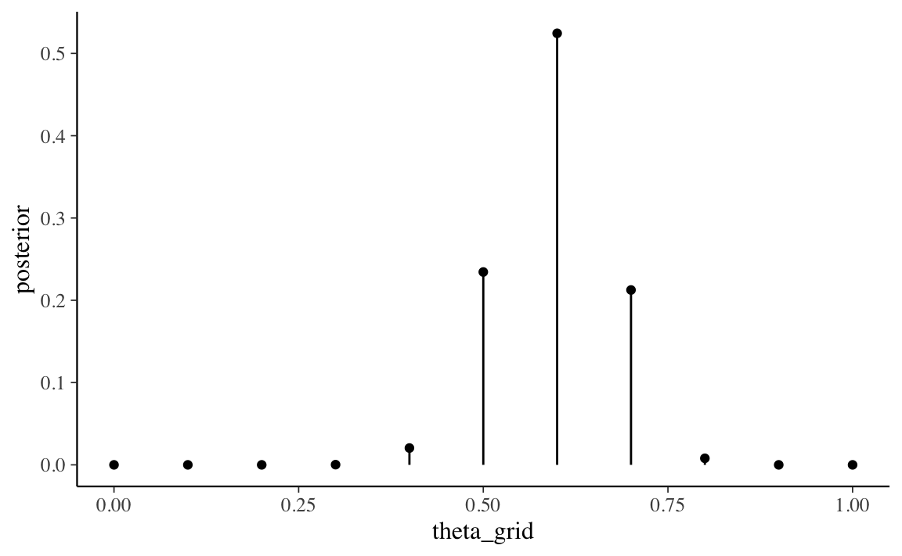
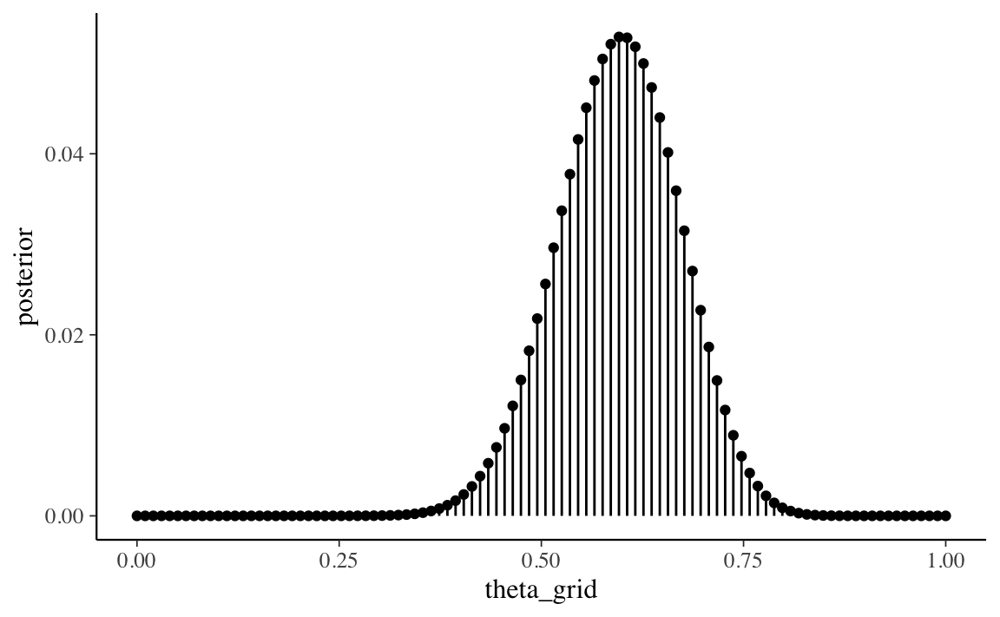
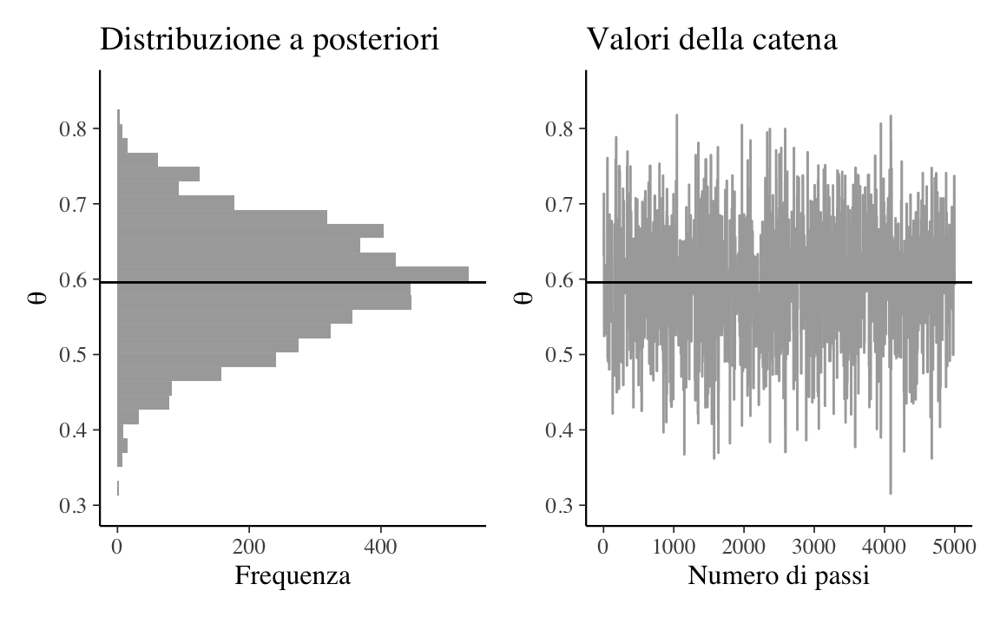

In generale, in un problema bayesiano i dati \(y\) provengono da una densità \(p(y \mid \theta)\) e al parametro \(\theta\) viene assegnata una densità a priori \(p(\theta)\). Dopo avere osservato i dati \(Y = y\), la funzione di verosimiglianza è uguale a \(\mathcal{L}(\theta) = p(y \mid \theta)\) e la densità a posteriori diventa
Se vogliamo trovare la distribuzione a posteriori con metodi analitici è necessario ricorrere all’impiego di distribuzioni a priori coniugate, come nello schema beta-binomiale. Per quanto “semplice” in termini formali, la scelta di distribuzioni a priori coniugate limita di molto le possibili scelte del ricercatore. Inoltre, non è sempre sensato, dal punto di vista teorico, utilizzare tali distribuzioni per la stima dei parametri di interesse. Il mancato ricorso all’impiego delle distribuzioni a priori coniugate richiede necessariamente il computo dell’espressione a denominatore della formula di Bayes che solo in rare occasioni può essere ottenuta per via analitica. In altre parole, è possibile ottenere analiticamenre la distribuzione a posteriori solo per alcune specifiche combinazioni di distribuzioni a priori e verosimiglianza, il che limita considerevolmente la flessibilità della modellizzazione. Inoltre, i sommari della distribuzione a posteriori sono espressi come rapporto di integrali. Ad esempio, la media a posteriori di \(\theta\) è data da
Il calcolo del valore atteso a posteriori richiede dunque il computo di due integrali, quello a denominatore e quello a numeratore dell’espressione, ciascuno dei quali non esprimibile in forma chiusa. Per questa ragione, la strada principale che viene seguita nella modellistica bayesiana è quella che porta a determinare la distribuzione a posteriori non per via analitica, ma bensì mediante metodi numerici. La simulazione fornisce dunque la strategia generale del calcolo bayesiano. A questo fine vengono principalmente usati i metodi di campionamento Monte Carlo basati su Catena di Markov (MCMC). Tali metodi costituiscono una potente e praticabile alternativa per la costruzione della distribuzione a posteriori per modelli complessi e consentono di decidere quali distribuzioni a priori e quali distribuzioni di verosimiglianza usare sulla base di considerazioni teoriche soltanto, senza dovere preoccuparsi di altri vincoli.
Dato che è basata su metodi computazionalmente intensivi, la stima numerica della funzione a posteriori può essere svolta soltanto mediante software. In anni recenti i metodi Bayesiani di analisi dei dati sono diventati sempre più popolari proprio perché la potenza di calcolo necessaria per svolgere tali calcoli è ora alla portata di tutti. Questo non era vero solo pochi decenni fa.
In questo Capitolo verranno presentati due metodi di simulazione iterativa1 che consentono di generare dalle distribuzioni a posteriori campioni dei parametri del modello:
metodi basati su griglia: dove, sebbene non sia disponibile alcuna formula algebrica in forma chiusa, le proprietà della distribuzione a posteriori possono essere calcolate con una precisione arbitraria;
metodi Monte Carlo: dove, utilizzando appropriate funzioni di numeri casuali, viene generato un ampio campione di casi della variabile casuale per poi stimare empiricamente la proprietà di interesse in base al campione così otttenuto.
19.1 Metodo basato su griglia
Il metodo basato su griglia (grid-based) è un metodo numerico esatto basato su una griglia di punti uniformemente spaziati. Anche se la maggior parte dei parametri è continua (ovvero, in linea di principio ciascun parametro può assumere un numero infinito di valori), possiamo ottenere un’eccellente approssimazione della distribuzione a posteriori considerando solo una griglia finita di valori dei parametri. In un tale metodo, la densità di probabilità a posteriori può dunque essere approssimata tramite le densità di probabilità calcolate in ciascuna cella della griglia.
Il metodo basato su griglia si sviluppa in quattro fasi:
fissare una griglia discreta di possibili valori \(\theta\);
valutare la distribuzione a priori \(p(\theta)\) e la funzione di verosimiglianza \(p(y \mid \theta)\) in corrispondenza di ciascun valore \(\theta\) della griglia;
ottenere un’approssimazione discreta della densità a posteriori:
per ciascun valore \(\theta\) della griglia, calcolare il prodotto \(p(\theta) p(y \mid \theta)\);
normalizzare i prodotti così ottenuti in modo tale che la loro somma sia 1;
selezionare \(N\) valori casuali della griglia in modo tale da ottenere un campione casuale delle densità a posteriori normalizzate.
Possiamo migliorare l’approssimazione aumentando il numero di punti della griglia. Infatti utilizzando un numero infinito di punti si otterrebbe la descrizione esatta della distribuzione a posteriori, dovendo però pagare il costo dell’utilizzo di infinite risorse di calcolo. Il limite maggiore dell’approccio basato su griglia è che, al crescere della dimensionalità \(N\) dello spazio dei parametri, i punti della griglia necessari per avere una buona stima crescerebbero esponenzialmente con \(N\), rendendo questo metodo inattuabile.
19.1.1 Modello Beta-Binomiale
Per fare un esempio, consideriamo lo schema beta-binomiale di cui conosciamo la soluzione esatta. Utilizziamo nuovamente i dati di Zetsche et al. (2019): 23 “successi” in 30 prove Bernoulliane indipendenti.2 Imponiamo alla distribuzione a priori su \(\theta\) (probabilità di successo in una singola prova, laddove per “successo” si intende una aspettativa distorta negativamente dell’umore futuro) una \(\mbox{Beta}(2, 10)\) per descrivere la nostra incertezza sul parametro prima di avere osservato i dati. Dunque, il modello diventa:
In queste circostanze, l’aggiornamento bayesiano produce una distribuzione a posteriori Beta di parametri 25 (\(y + \alpha\) = 23 + 2) e 17 (\(n - y + \beta\) = 30 - 23 + 10):
Per approssimare la distribuzione a posteriori, fissiamo una griglia di \(n = 11\) valori equispaziati: \(\theta \in \{0, 0.1, 0.2, 0.3, 0.4, 0.5, 0.6, 0.7, 0.8, 0.9, 1\}\):
Codice
grid_data<-tibble( theta_grid =seq(from =0, to =1, length.out =11))grid_data#> # A tibble: 11 × 1#> theta_grid#> <dbl>#> 1 0 #> 2 0.1#> 3 0.2#> 4 0.3#> 5 0.4#> 6 0.5#> 7 0.6#> 8 0.7#> # … with 3 more rows
In corrispondenza di ciascun valore della griglia, valutiamo la distribuzione a priori \(\mbox{Beta}(2, 10)\) e la verosimiglianza \(\mbox{Bin}(y = 23, n = 30)\).
In ciascuna cella della griglia calcoliamo poi il prodotto della verosimiglianza e della distribuzione a priori. Troviamo così un’approssimazione discreta e non normalizzata della distribuzione a posteriori (unnormalized). Normalizziamo questa approssimazione dividendo ciascun valore unnormalized per la somma di tutti i valori del vettore:
La figura @ref(fig:grid-method-6points-posterior-plot) mostra un grafico della distribuzione a posteriori discretizzata così ottenuta:
Codice
grid_data%>%ggplot(aes(x =theta_grid, y =posterior))+geom_point()+geom_segment(aes( x =theta_grid, xend =theta_grid, y =0, yend =posterior))

Distribuzione a posteriori discretizzata ottenuta con il metodo grid-based per \(y\) = 23 successi in 30 prove Bernoulliane, con distribuzione a priori \(\mbox{Beta}(2, 10)\). È stata utilizzata una griglia di solo \(n\) = 11 punti.
L’ultimo passo della simulazione è il campionamento dalla distribuzione a posteriori discretizzata:
La figura @ref(fig:grid-method-6points-posterior-plot-sampling) mostra che, con una griglia così sparsa abbiamo ottenuto una versione approssimata della vera distribuzione a posteriori (all’istogramma è stata sovrapposta l’esatta distribuzione a posteriori \(\mbox{Beta}(25, 17)\)).
Campionamento dalla distribuzione a posteriori discretizzata ottenuta con il metodo grid-based per \(y\) = 23 successi in 30 prove Bernoulliane, con distribuzione a priori \(\mbox{Beta}(2, 10)\). È stata utilizzata una griglia di solo \(n\) = 11 punti.
Possiamo ottenere un risultato migliore con una griglia più fine, come indicato nella figura @ref(fig:grid-method-100points-posterior-plot-sampling):
Codice
grid_data<-tibble( theta_grid =seq(from =0, to =1, length.out =100))grid_data<-grid_data%>%mutate( prior =dbeta(theta_grid, 2, 10), likelihood =dbinom(23, 30, theta_grid))grid_data<-grid_data%>%mutate( unnormalized =likelihood*prior, posterior =unnormalized/sum(unnormalized))grid_data%>%ggplot(aes(x =theta_grid, y =posterior))+geom_point()+geom_segment(aes( x =theta_grid, xend =theta_grid, y =0, yend =posterior))

Distribuzione a posteriori discretizzata ottenuta con il metodo grid-based per \(y\) = 23 successi in 30 prove Bernoulliane, con distribuzione a priori \(\mbox{Beta}(2, 10)\). È stata utilizzata una griglia di \(n\) = 100 punti.
Campioniamo ora 10000 punti:
Codice
# Set the seedset.seed(84735)post_sample<-sample_n(grid_data, size =1e4, weight =posterior, replace =TRUE)
Con il campionamento dalla distribuzione a posteriori discretizzata costruita mediante una griglia più densa (\(n = 100\)) otteniamo un risultato soddisfacente (figura @ref(fig:grid-method-100points-posterior-plot-and-correct-posterior)): ora la distribuzione dei valori prodotti dalla simulazione approssima molto bene la corretta distribuzione a posteriori \(p(\theta \mid y) = \mbox{Beta}(25, 17)\).
Campionamento dalla distribuzione a posteriori discretizzata ottenuta con il metodo grid-based per \(y\) = 23 successi in 30 prove Bernoulliane, con distribuzione a priori \(\mbox{Beta}(2, 10)\). È stata utilizzata una griglia di \(n\) = 100 punti. All’istogramma è stata sovrapposta la corretta distribuzione a posteriori, ovvero la densità \(\mbox{Beta}(25, 17)\).
In conclusione, il metodo basato su griglia è molto intuitivo e non richiede particolari competenze di programmazione per essere implementato. Inoltre, fornisce un risultato che, per tutti gli scopi pratici, può essere considerato come un campione casuale estratto da \(p(\theta \mid y)\). Tuttavia, anche se tale metodo fornisce risultati accuratissimi, esso ha un uso limitato. A causa della maledizione della dimensionalità3, tale metodo può solo essere solo nel caso di semplici modelli statistici, con non più di due parametri. Nella pratica concreta tale metodo viene dunque sostituito da altre tecniche più efficienti in quanto, anche nei più comuni modelli utilizzati in psicologia, vengono solitamente stimati centinaia se non migliaia di parametri.
19.2 Metodo Monte Carlo
I metodi più ampiamente adottati nell’analisi bayesiana per la costruzione della distribuzione a posteriori per modelli complessi sono i metodi di campionamento MCMC. Tali metodi consentono al ricercatore di decidere quali distribuzioni a priori e quali distribuzioni di verosimiglianza usare sulla base di considerazioni teoriche soltanto, senza doversi preoccupare di altri vincoli. Dato che è basata su metodi computazionalmente intensivi, la stima numerica MCMC della funzione a posteriori può essere svolta soltanto mediante software. In anni recenti i metodi Bayesiani di analisi dei dati sono diventati sempre più popolari proprio perché la potenza di calcolo necessaria per svolgere tali calcoli è ora alla portata di tutti. Questo non era vero solo pochi decenni fa.
19.2.1 Integrazione di Monte Carlo
Il termine Monte Carlo si riferisce al fatto che la computazione fa ricorso ad un ripetuto campionamento casuale attraverso la generazione di sequenze di numeri casuali. Una delle sue applicazioni più potenti è il calcolo degli integrali mediante simulazione numerica. Supponiamo di essere in grado di estrarre campioni casuali dalla distribuzione continua \(p(\theta \mid y)\) di media \(\mu\). Se possiamo ottenere una sequenza di realizzazioni indipendenti
In altre parole, l’aspettazione teorica di \(\theta\) può essere approssimata dalla media campionaria di un insieme di realizzazioni indipendenti ricavate da \(p(\theta \mid y)\). Per la Legge Forte dei Grandi Numeri, l’approssimazione diventa arbitrariamente esatta per \(T \rightarrow \infty\).4
Quello che è stato detto sopra non è altro che un modo sofisticato per dire che, se vogliamo calcolare un’approssimazione del valore atteso di una variabile casuale, non dobbiamo fare altro che la media aritmetica di un grande numero di realizzazioni indipendenti della variabile casuale. Come è facile intuire, l’approssimazione migliora al crescere del numero di dati che abbiamo a disposizione.
Un’altra importante funzione di \(\theta\) è la funzione indicatore, \(I(l < \theta < u)\), che assume valore 1 se \(\theta\) giace nell’intervallo \((l, u)\) e 0 altrimenti. Il valore di aspettazione di \(I(l < \theta < u)\) rispetto a \(p(\theta)\) dà la probabilità che \(\theta\) rientri nell’intervallo specificato, \(Pr(l < \theta < u)\), e può essere approssimato usando l’integrazione Monte Carlo, ovvero prendendo la media campionaria del valore della funzione indicatore per ogni realizzazione \(\theta^{(t)}\). È semplice vedere come
Presentiamo qui l’integrazione di Monte Carlo perché, nell’analisi bayesiana, il metodo Monte Carlo viene usato per ottenere un’approssimazione della distribuzione a posteriori, quando tale distribuzione non può essere calcolata con metodi analitici. In altre parole, il metodo Monte Carlo consente di ottenere un gran numero di valori \(\theta\) che, nelle circostanze ideali, avrà una distribuzione identica alla distribuzione a posteriori \(p(\theta \mid y)\).
19.2.2 Descrizione intuitiva
Se la funzione di densità \(p(\theta \mid y)\) è conosciuta, è facile ottenere una sequenza di realizzazioni iid della variabile casuale, per esempio, usando \(\textsf{R}\). Ma ora supponiamo di non conoscere \(p(\theta \mid y)\). Quello che vogliamo fare è ottenere comunque una sequenza di valori \(\theta\). Anche se tali valori non saranno iid, per qualunque coppia di valori \(\theta_a\) e \(\theta_b\) nella sequenza vogliamo che sia soddisfatto il seguente vincolo:
\[
\frac{\#\theta'\text{ nella sequenza} = \theta_a}{\#\theta'\text{ nella sequenza} = \theta_b} \approx \frac{p(\theta_a \mid y)}{p(\theta_b \mid y)}.
\]
L’algoritmo di Metropolis ci consente di ottenere una tale sequenza di valori, la cui distribuzione sarà dunque uguale a \(p(\theta \mid y)\). In forma intuitiva, l’algoritmo di Metropolis può essere descritto come indicato di seguito.
Data una sequenza di valori \(\{\theta^{(1)}, \theta^{(2)},\dots, \theta^{(t)}\}\), ci poniamo il problema di aggiungere un nuovo valore \(\theta^{t+1}\) alla sequenza.
Consideriamo un valore \(\theta^*\) simile a \(\theta^{(t)}\); ci chiediamo se dobbiamo inserire un tale valore nella sequenza oppure no.
Se \(p(\theta^* \mid y) > p(\theta^{(t)} \mid y)\), allora sicuramente lo dobbiamo aggiungere alla sequenza perché, nella sequenza, il numero di valori \(\theta^*\) deve essere maggiore del numero dei valori \(\theta^{(t)}\).
Se invece \(p(\theta^* \mid y) < p(\theta^{(t)} \mid y)\), allora non dobbiamo necessariamente aggiungere \(\theta^*\) alla sequenza.
La decisione di aggiungere o no \(\theta^*\) alla sequenza dipenderà dal confronto tra \(p(\theta^* \mid y)\) e \(p(\theta^{(t)} \mid y)\).
Se \(r > 1\), accettiamo \(\theta^*\) e lo aggiungiamo alla sequenza: \(\theta^{(t+1)} = \theta^*\), in quanto \(\theta^{(t)}\) è già presente nella sequenza e \(\theta^*\) ha una probabilità maggiore di \(\theta^{(t)}\).
Se \(r < 1\), per ciasuna istanza di \(\theta^{(t)}\), accettiamo \(\theta^*\) solo una frazione di volte uguale a
in quanto la frequenza relativa dei valori \(\theta^{(t)}\) e \(\theta^*\) nella sequenza deve essere uguale al rapporto precedente. Per ottenere questo risultato, poniamo \(\theta^{(t+1)}\) uguale a \(\theta^*\) o \(\theta^{(t)}\) con probabilità rispettivamente uguali a \(r\) o \(1 - r\).
Questa è l’intuizione che sta alla base dell’algoritmo di Metropolis et al. (1953).
19.2.3 Un’applicazione empirica
Poniamoci ora il problema di usare l’algoritmo di Metropolis per calcolare la distribuzione a posteriori di una proporzione \(\theta\). Usiamo nuovamente i dati di Zetsche et al. (2019) (ovvero, 23 “successi” in 30 prove Bernoulliane) e, per rendere il problema più interessante, assumiamo per \(\theta\) una distribuzione a priori \(\mbox{Beta}(2, 10)\). Sappiamo che, in tali circostanze, la distribuzione a posteriori può essere ottenuta analiticamente tramite lo schema beta-binomiale ed è una \(\mbox{Beta}(25, 17)\). Se vogliamo il valore della media a posteriori di \(\theta\), il risultato esatto è dunque
È anche possibile ottenere il valore della media a posteriori per via numerica. Sapendo che la distribuzione a posteriori è una \(\mbox{Beta}(25, 17)\), possiamo estrarre un campione di osservazioni da una tale distribuzione e calcolare la media. Con poche osservazioni (diciamo 10) otteniamo un risultato molto approssimato
Lo stesso si può dire delle altre statistiche descrittive: moda, varianza, eccetera. Nel presente esempio, la simulazione Monte Carlo produce il risultato desiderato perché
sappiamo che la distribuzione a posteriori è una \(\mbox{Beta}(25, 17)\),
è possibile usare le funzioni \(\textsf{R}\) per estrarre campioni casuali da una tale distribuzione.
Tuttavia, capita raramente di usare una distribuzione a priori coniugata alla verosimiglianza. Quindi, in generale, le due condizioni descritte sopra non si applicano. Ad esempio, nel caso di una verosimiglianza binomiale e di una distribuzione a priori gaussiana, la distribuzione a posteriori di \(\theta\) è
Una tale distribuzione non è implementata in \(\textsf{R}\) e dunque non possiamo ottenere dei campioni casuali da una tale distribuzione.
In tali circostanze, però, è ancora possibile ottenere ottenere un campione causale dalla distribuzione a posteriori in un altro modo. Questo risultato si ottiene utilizzando i metodi Monte Carlo basati su Catena di Markov (MCMC). I metodi MCMC, di cui l’algoritmo di Metropolis è un caso particolare e ne rappresenta il primo esempio, sono una classe di algoritmi che consentono di ottenere campioni casuali da una distribuzione a posteriori senza dovere conoscere la rappresentazione analitica di una tale distribuzione.5 Le tecniche MCMC sono il metodo computazionale maggiormente usato per risolvere i problemi dell’inferenza bayesiana.
19.2.4 Una passeggiata casuale sui numeri naturali
Prima di applicare l’algoritmo di Metropolis ai dati di Zetsche et al. (2019), consideriamo un caso più semplice. In questo esempio preliminare useremo l’algoritmo di Metropolis per ottenere un campione casuale da una distribuzione di massa di probabilità; esamineremo il caso continuo in seguito.6
Definiamo la distribuzione di probabilità discreta della variabile casuale \(X\) che assume valori nell’insieme dei numeri naturali \(1, 2, \dots, K\). Scriviamo in \(\textsf{R}\) la funzione pd() che assegna a \(X = \{1, 2, \dots, 8\}\) valori di probabilità proporzionali agli interi 5, 10, 4, 4, 20, 20, 12 e 5:
La figura @ref(fig:formetropolisdistr) illustra la distribuzione di massa di probabilità che è stata generata in questo modo.
Codice
x<-1:8prob_dist%>%ggplot(aes(x =x, y =prob))+geom_bar(stat ="identity", width =0.06)+scale_x_continuous("x", labels =as.character(x), breaks =x)+labs( y ="Probabilità", x ="X")
Distribuzione di massa di probabilità della variabile casuale discreta \(X\) avente supporto \(\{1, 2, ..., 8\}\).
Per i dati di questo esempio, l’algoritmo di Metropolis corrisponde alla seguente passeggiata aleatoria.7
L’algoritmo inizia con un valore iniziale qualsiasi da 1 a \(K=8\) della variabile casuale.
Per simulare il valore successivo della sequenza, lanciamo una moneta equilibrata. Se esce testa, consideriamo come valore candidato il valore immediatamente precedente al valore corrente nella sequenza; se esce croce, il candidato è il valore nella sequenza immediatamente successivo a quello corrente.
Si calcola il rapporto \(r\) tra la probabilità del valore candidato e la probabilità del valore corrente:
\[
r = \frac{pd(\text{valore candidato})}{pd(\text{valore corrente})}.
\]
Si estrae un numero a caso \(\in [0, 1]\). Se tale valore è minore di \(r\) si accetta il valore candidato come valore successivo della catena markoviana; altrimenti il valore successivo della catena rimane il valore corrente.
In termini tecnici (si veda l’Appendice @ref(markov-chains)), i passi da 1 a 4 definiscono una catena di Markov irriducibile e aperiodica sui valori di stato \(\{1, 2,\dots, 8\}\), dove il passo 1 fornisce il valore iniziale della catena e i passi da 2 a 4 definiscono la matrice di transizione \(P\). Il campionamento dalla distribuzione di massa pd corrisponde ad una passeggiata aleatoria che inizia da una posizione qualsiasi e che ripete le fasi 2, 3 e 4 dell’algoritmo di Metropolis. Dopo un gran numero di passi, la distribuzione dei valori della catena markoviana approssimerà la distribuzione di probabilità pd.
La funzione random_walk() implementa l’algoritmo di Metropolis. Tale funzione prende in input la distribuzione di probabilità pd, la posizione di partenza start e il numero di passi dell’algoritmo num_steps.
Implementiamo ora l’algoritmo di Metropolis utilizzando, quale valore iniziale, \(X=4\). Ripetiamo la simulazione 10,000 volte.
Codice
out<-random_walk(pd, 4, 1e4)S<-tibble(out)%>%group_by(out)%>%summarize( N =n(), Prob =N/10000)prob_dist2<-rbind(prob_dist,tibble( x =S$out, prob =S$Prob))prob_dist2$Type<-rep(c("Prob. corrette", "Prob. simulate"), each =8)
Codice
x<-1:8prob_dist2%>%ggplot(aes(x =x, y =prob, fill =Type))+geom_bar( stat ="identity", width =0.1, position =position_dodge(0.3))+scale_x_continuous("x", labels =as.character(x), breaks =x)+scale_fill_manual(values =c("black", "gray80"))+theme(legend.title =element_blank())+labs( y ="Probabilità", x ="X")
L’istogramma confronta i valori prodotti dall’algoritmo di Metropolis con i valori corretti della distribuzione di massa di probabilità.
La figura @ref(fig:metropolishistogramsim) confronta l’istogramma dei valori simulati dalla passeggiata aleatoria con l’effettiva distribuzione di probabilità pd. Si noti che le due distribuzioni sono molto simili.
19.2.5 L’algoritmo di Metropolis
Dopo avere introdotto l’algoritmo di Metropolis con l’esempio proposto da Albert & Hu (2019), consideriamo ora l’algoritmo nella sua forma più generale.8 Nelle iterazioni dell’algoritmo di Metropolis possiamo distinguere le seguenti fasi.
Si inizia con un punto arbitrario \(\theta^{(1)}\); quindi il primo valore della catena di Markov \(\theta^{(1)}\) può corrispondere semplicemente ad un valore a caso tra i valori possibili del parametro.
Per ogni passo successivo della catena, \(m + 1\), si estrae un valore candidato \(\theta'\) da una distribuzione proposta: \(\theta' \sim \Pi(\theta)\). La distribuzione proposta può essere qualunque distribuzione, anche se, idealmente, è meglio che sia simile alla distribuzione a posteriori. In pratica, però, la distribuzione a posteriori è sconosciuta e quindi il valore \(\theta'\) viene estratto a caso da una qualche distribuzione simmetrica centrata sul valore corrente \(\theta^{(m)}\) del parametro. Nell’esempio presente useremo la gaussiana quale distribuzione proposta. La distribuzione proposta (gaussiana) sarà centrata sul valore corrente della catena e avrà una deviazione standard appropriata: \(\theta' \sim \mathcal{N}(\theta^{(m)}, \sigma)\). In pratica, questo significa che, se \(\sigma\) è piccola, il valore candidato \(\theta'\) sarà simile al valore corrente \(\theta^{(m)}\).
Si calcola il rapporto \(r\) tra la densità della distribuzione a posteriori non normalizzata calcolata nel punto \(\theta'\) e la densità nel punto \(\theta^{(m)}\):
Il numeratore della @ref(eq:ratio-metropolis) contiene il prodotto tra la verosimiglianza \(p(y \mid \theta')\) e la densità a priori di \(\theta\), entrambe calcolate nel punto \(\theta'\). Il denominatore contiene il prodotto tra la verosimiglianza \(p(y \mid \theta^{(m)})\) e la densità a priori di \(\theta\), entrambe calcolate nel punto \(\theta^{(m)}\). Si noti che, essendo un rapporto, la @ref(eq:ratio-metropolis) cancella la costante di normalizzazione.
Si decide se accettare il candidato \(\theta'\) oppure se rigettarlo e estrarre un nuovo valore dalla distribuzione proposta. Possiamo pensare al rapporto \(r\) come alla risposta alla seguente domanda: alla luce dei dati, quale stima di \(\theta\) è più plausibile il valore candidato o il valore corrente? Se \(r\) è maggiore di 1, ciò significa che il candidato è più plausibile del valore corrente; dunque il candidato viene sempre accettato. Altrimenti, si decide di accettare il candidato con una probabilità minore di 1, ovvero non sempre, ma soltanto con una probabilità uguale ad \(r\). Se \(r\) è uguale a 0.10, ad esempio, questo significa che la credibilità a posteriori del valore candidato è 10 volte più piccola della credibilità a posteriori del valore corrente. Dunque, il valore candidato verrà accettato solo nel 10% dei casi. Come conseguenza di questa strategia di scelta, l’algoritmo di Metropolis ottiene un campione casuale dalla distribuzione a posteriori, dato che la probabilità di accettare il valore candidato è proporzionale alla densità del candidato nella distribuzione a posteriori. Dal punto di vista algoritmico, la procedura descritta sopra viene implementata confrontando il rapporto \(r\) con un valore estratto a caso da una distribuzione uniforme \(\mbox{Unif}(0, 1)\). Se \(r > u \sim \mbox{Unif}(0, 1)\), allora il candidato \(\theta'\) viene accettato e la catena si muove in quella nuova posizione, ovvero \(\theta^{(m+1)} = \theta'\). Altrimenti \(\theta^{(m+1)} = \theta^{(m)}\) e si estrae un nuovo candidato dalla distribuzione proposta.
Il passaggio finale dell’algoritmo calcola l’accettanza in una specifica esecuzione dell’algoritmo, ovvero la proporzione di candidati \(\theta'\) che sono stati accettati quali valori successivi della catena.
L’algoritmo di Metropolis prende come input il numero \(T\) di passi da simulare, la deviazione standard \(\sigma\) della distribuzione proposta e la densità a priori, e ritorna come output la sequenza \(\theta^{(1)}, \theta^{(2)}, \dots, \theta^{(T)}\). La chiave del successo dell’algoritmo di Metropolis è il numero di passi fino a che la catena approssima la stazionarietà. Tipicamente i primi da 1000 a 5000 elementi sono scartati. Dopo un certo periodo \(k\) (detto di burn-in), la catena di Markov converge ad una variabile casuale che è distribuita secondo la distribuzione a posteriori. In altre parole, i campioni del vettore \(\left(\theta^{(k+1)}, \theta^{(k+2)}, \dots, \theta^{(T)}\right)\) diventano campioni di \(p(\theta \mid y)\).
19.2.6 Un’applicazione empirica
Possiamo ora utilizzare l’algoritmo di Metropolis per trovare, nel caso dei pazienti clinici depressi di Zetsche et al. (2019), la distribuzione a posteriori di \(\theta\), ovvero la probabilità che l’umore futuro atteso sia negativo. I dati di Zetsche et al. (2019) ci dicono che, nel caso dei 30 pazienti che sono stati esaminati, 23 hanno manifestato aspettative distorte negativamente circa il loro stato d’animo futuro. A priori, abbiamo deciso di imporre su \(\theta\) una \(\mbox{Beta}(2, 10)\).9
19.2.6.1 Funzioni
Definiamo la funzione likelihood(), considerati come fissi i dati di Zetsche et al. (2019), ritorna l’ordinata della verosimiglianza binomiale per ciascun valore param in input:
Codice
likelihood<-function(param, x=23, N=30){dbinom(x, N, param)}
La funzione prior() ritorna l’ordinata della distribuzione a priori \(\mbox{Beta}(2, 10)\) per ciascun valore param in input:
Per implementare l’algoritmo di Metropolis utilizzeremo una distribuzione proposta gaussiana. Il valore candidato sarà dunque un valore selezionato a caso da una gaussiana di parametri \(\mu\) uguale al valore corrente nella catena e \(\sigma = 0.9\). In questo esempio, la deviazione standard \(\sigma\) è stata scelta empiricamente in modo tale da ottenere una accettanza adeguata. L’accettanza ottimale èpari a circa 0.20/0.30 — se l’accettanza è troppo grande, l’algoritmo esplora uno spazio troppo ristretto della distribuzione a posteriori.10
Codice
proposal_distribution<-function(param){while(1){res=rnorm(1, mean =param, sd =0.9)if(res>0&res<1)break}res}
Ho inserito un controllo che impone al valore candidato di essere incluso nell’intervallo [0, 1], com’è necessario per il valore di una proporzione.11
L’algoritmo di Metropolis viene implementato nella seguente funzione:
In questo modo, abbiamo ottenuto una catena di Markov costituita da 10,001 valori. Escludiamo i primi 5,000 valori considerati come burn-in. Consideriamo i restanti 5,001 valori come un campione casuale estratto dalla distribuzione a posteriori \(p(\theta \mid y)\).
il che conferma la bontà della deviazione standard (\(\sigma\) = 0.9) scelta per la distribuzione proposta.
Mediante i valori della catena così ottenuta è facile trovare una stima a posteriori del parametro \(\theta\). Per esempio, la stima della media a posteriori è:
Una figura che mostra l’approssimazione di \(p(\theta \mid y)\) ottenuta con l’algoritmo di Metropolis, insieme ad un trace plot dei valori della catena di Markov, è prodotta nel modo seguente:
Codice
p1<-tibble( x =chain[-(1:burnin)])%>%ggplot(aes(x))+geom_histogram(fill ="darkgray")+labs( x =expression(theta), y ="Frequenza", title ="Distribuzione a posteriori")+geom_vline( xintercept =mean(chain[-(1:burnin)]))+xlim(c(0.3, 0.85))+coord_flip()p2<-tibble( x =1:length(chain[-(1:burnin)]), y =chain[-(1:burnin)])%>%ggplot(aes(x, y))+geom_line(color ="darkgray")+labs( x ="Numero di passi", y =expression(theta), title ="Valori della catena")+geom_hline( yintercept =mean(chain[-(1:burnin)]), colour ="black")+ylim(c(0.3, 0.85))p1+p2

Sinistra. Stima della distribuzione a posteriori della probabilità di una aspettativa futura distorta negativamente per i dati di Zetsche et al. (2019). Destra. Trace plot dei valori della catena di Markov escludendo il periodo di burn-in.
19.2.6.3 Funzione metropolis()
I calcoli precedenti possono essere svolti anche mediante la funzione metropolis() del pacchetto ProbBayes. Per fare un esempio, consideriamo i dati corrispondenti a 23 successi in 30 prove, con una distribuzione a priori \(\mbox{Beta}(2, 10)\). Le istruzioni sono le seguenti:
Codice
set.seed(123)lpost<-function(theta, s){dbeta(theta, 2, 10,log =TRUE)+dbinom(23, 30, theta, log =TRUE)}post<-ProbBayes::metropolis(lpost, 0.5, 0.2, 8000)tibble( x =post$S[4001:8000])%>%ggplot(aes(x))+geom_histogram(fill ="darkgray")+labs( x =expression(theta), y ="Frequenza", title ="Distribuzione a posteriori")
Utilizzando un burn-in piuttosto lungo, la stima a posteriori di \(\theta\) diventa:
Il campionamento di Gibbs è un algoritmo MCMC per ottenere una sequenza di campioni casuali da una distribuzione di probabilità congiunta di due o più variabili casuali quando il campionamento diretto si dimostra difficoltoso. Questa sequenza può essere usata per approssimare la distribuzione congiunta.
Consideriamo, quale esempio, la seguente distribuzione di probabilità congiunta \(p(x, y)\) delle due variabili casuali \(X\) e \(Y\)(lo script \(\textsf{R}\) è ricavato da Albert & Hu, 2019):
Supponiamo che sia difficile campionare direttamente da \(p(x, y)\); supponiamo, tuttavia, di poter facilmente campionare dalle distribuzioni condizionate \(p(x \mid y)\) e \(p(y \mid x)\). Poniamo che l’algoritmo inizi con il valore \(X = 1\).
Passo 1. Si simula \(Y\) dalla distribuzione condizionata \(f(y \mid X = 1)\). Questa distribuzione condizionata è contenuta nella prima colonna della matrice \(p(x, y)\), ovvero
Codice
p[, 1]#> 1 2 3 4 #> 0.100 0.075 0.050 0.025
Supponiamo di avere ottenuto il valore \(Y = 2\).
Passo 2. Ora estraiamo un valore a caso \(X\) dalla distribuzione condizionata \(f(x \mid Y = 2)\). Questa distribuzione condizionata è contenuta nella seconda riga della matrice \(p(x, y)\), ovvero
Codice
p[2, ]#> 1 2 3 4 #> 0.075 0.100 0.075 0.050
Supponiamo di avere ottenuto il valore \(X = 3\).
Implementando i passi 1 e 2, si ottiene un’iterazione del campionamento di Gibbs, ovvero la coppia simulata \((X, Y) = (3, 2)\). Il campionamento di Gibbs si realizza ripetendo i passaggi 1 e 2 molte volte, laddove in ogni passo condizioniamo i valori simulati ai valori \(X\) o \(Y\) più recenti.
Le seguenti istruzioni generano 100,000 iterazioni dell’algorimo di Gibbs per l’esempio in considerazione:
Esaminando i risultati ottenuti, notiamo che il campionamento di Gibbs produce una buona approssimazione della distribuzione di probabilità congiunta di partenza:
L’esempio precedente ha dimostrato il campionamento di Gibbs per una distribuzione discreta a due parametri, ma il campionamento di Gibbs funziona per qualsiasi distribuzione a due parametri. Per illustrare questo, consideriamo nuovamente lo schema beta-binomiale.
\[
\begin{split}
Y \mid p &\sim \mbox{Binom}(n, p),\\
p &\sim \mbox{Beta}(a, b).
\end{split}
\]
Per implementare il campionamento Gibbs per questa situazione, è necessario identificare le due distribuzioni condizionate \(Y \mid P\) e \(p \mid Y\). A questo fine, calcoliamo prima la distribuzione congiunta \(f(Y, p)\):
Per trovare le distribuzioni marginali, sopprimiamo la dipendenza di \(f(Y, p)\) dalle costanti irrilevanti. Se teniamo fisso \(p\), l’unica variabile casuale è \(y\). Dunque, tutto il contenuto della prima parentesi quadra diventa una costante che può essere ignorata. Per cui \(f(y \mid p)\) è \(\mbox{Binom}(n, p)\). D’altra parte, se teniamo fisso \(y\), ignorando le costanti, la densità congiunta risulta proporzionale a
\[
p^{y+a-1} (1-p)^{n-y+b-1}
\]
che è il kernel della distribuzione Beta con parametri di forma \(y+a\) e \(n-y+b\). Quindi abbiamo \(f(p \mid y) = \mbox{Beta}(y+a, n-y+b)\).
Una volta trovate le due distribuzioni condizionate è facile modificare l’algoritmo di Gibbs visto sopra per adattarlo alla situazione presente:
Di seguito eseguiamo il campionamento Gibbs per questo modello Beta-Binomiale con \(n=20\), \(a = 5\) e \(b=5\). Dopo aver eseguito 100,000 iterazioni, possiamo considerare la matrice \(sp\) come un campione casuale tratto dalla distribuzione congiunta \(f(Y, p)\).
Se dalla sequenza di coppie \((Y, p)\) generate dall’algoritmo di Gibbs consideriamo solo i valori \(Y\), possiamo ottenere un’approssimazione della distribuzione marginale \(f(y)\) di \(Y\).
Codice
set.seed(123)sp<-data.frame(gibbs_betabin(20, 5, 5))ggplot(data.frame(Y =sp$X1), aes(Y))+geom_bar(width =0.5, fill ="darkgray")+ylab("Frequency")
La figura seguente mostra invece l’approssimazione della distribuzione congiunta \(f(Y, p)\) che è stata ottenuta:
Codice
ggplot(sp, aes(X1, X2))+geom_point(size =0.5, color ="black", alpha =0.05)+xlab("Y")+ylab("p")
19.2.8 Input
Negli esempi discussi in questo Capitolo abbiamo illustrato l’esecuzione di una singola catena in cui si parte un unico valore iniziale e si raccolgono i valori simulati da molte iterazioni. È possibile però che i valori di una catena siano influenzati dalla scelta del valore iniziale. Quindi una raccomandazione generale è di eseguire l’algoritmo di Metropolis più volte utilizzando diversi valori di partenza. In questo caso, si avranno più catene di Markov. Confrontando le proprietà delle diverse catene si esplora la sensibilità dell’inferenza alla scelta del valore di partenza. I software MCMC consentono sempre all’utente di specificare diversi valori di partenza e di generare molteplici catene di Markov.
19.2.9 Stazionarietà
Un punto importante da verificare è se il campionatore ha raggiunto la sua distribuzione stazionaria. La convergenza di una catena di Markov alla distribuzione stazionaria viene detta “mixing”.
19.2.9.1 Autocorrelazione
Informazioni sul “mixing” della catena di Markov sono fornite dall’autocorrelazione. L’autocorrelazione misura la correlazione tra i valori successivi di una catena di Markov. Il valore \(m\)-esimo della serie ordinata viene confrontato con un altro valore ritardato di una quantità \(k\) (dove \(k\) è l’entità del ritardo) per verificare quanto si correli al variare di \(k\). L’autocorrelazione di ordine 1 (lag 1) misura la correlazione tra valori successivi della catena di Markow (cioè, la correlazione tra \(\theta^{(m)}\) e \(\theta^{(m-1)}\)); l’autocorrelazione di ordine 2 (lag 2) misura la correlazione tra valori della catena di Markow separati da due “passi” (cioè, la correlazione tra \(\theta^{(m)}\) e \(\theta^{(m-2)}\)); e così via.
L’autocorrelazione di ordine \(k\) è data da \(\rho_k\) e può essere stimata come:
L’autocorrelazione di ordine 1 è semplicemente la correlazione tra ciascun elemento e quello successivo nella sequenza. Nell’esempio, il vettore rednoise è una sequenza temporale di 30 elementi. Il vettore rednoise[-length(rednoise)] include gli elementi con gli indici da 1 a 29 nella sequenza originaria, mentre il vettore rednoise[-1] include gli elementi 2:30. Gli elementi delle coppie ordinate dei due vettori avranno dunque gli indici \((1, 2), (2, 3), \dots (29, 30)\) degli elementi della sequenza originaria. La correlazione di Pearson tra i vettori rednoise[-length(rednoise)] e rednoise[-1] corrisponde all’autocorrelazione di ordine 1 della serie temporale.
Il Correlogramma è uno strumento grafico usato per la valutazione della tendenza di una catena di Markov nel tempo. Il correlogramma si costruisce a partire dall’autocorrelazione \(\rho_k\) di una catena di Markov in funzione del ritardo (lag) \(k\) con cui l’autocorrelazione è calcolata: nel grafico ogni barretta verticale riporta il valore dell’autocorrelazione (sull’asse delle ordinate) in funzione del ritardo (sull’asse delle ascisse). In \(\textsf{R}\), il correlogramma può essere prodotto con una chiamata a acf():
Nel correlogramma precedente vediamo che l’autocorrelazione di ordine 1 è circa pari a 0.4 e diminuisce per lag maggiori; per lag di 4, l’autocorrelazione diventa negativa e aumenta progressivamente fino ad un lag di 8; eccetera.
In situazioni ottimali l’autocorrelazione diminuisce rapidamente ed è effettivamente pari a 0 per piccoli lag. Ciò indica che i valori della catena di Markov che si trovano a più di soli pochi passi di distanza gli uni dagli altri non risultano associati tra loro, il che fornisce una conferma del “mixing” della catena di Markov, ossia della convergenza alla distribuzione stazionaria. Nelle analisi bayesiane, una delle strategie che consentono di ridurre l’autocorrelazione è quella di assottigliare l’output immagazzinando solo ogni \(m\)-esimo punto dopo il periodo di burn-in. Una tale strategia va sotto il nome di thinning.
19.2.10 Test di convergenza
Un test di convergenza può essere svolto in maniera grafica mediante le tracce delle serie temporali (trace plot), cioè il grafico dei valori simulati rispetto al numero di iterazioni. Se la catena è in uno stato stazionario le tracce mostrano assenza di periodicità nel tempo e ampiezza costante, senza tendenze visibili o andamenti degni di nota. Un esempio di trace plot è fornito nella figura @ref(fig:sim-markov-chain-zetsche) (destra).
Ci sono inoltre alcuni test che permettono di verificare la stazionarietà del campionatore dopo un dato punto. Uno è il test di Geweke che suddivide il campione, dopo aver rimosso un periodo di burn in, in due parti. Se la catena è in uno stato stazionario, le medie dei due campioni dovrebbero essere uguali. Un test modificato, chiamato Geweke z-score, utilizza un test \(z\) per confrontare i due subcampioni ed il risultante test statistico, se ad esempio è più alto di 2, indica che la media della serie sta ancora muovendosi da un punto ad un altro e quindi è necessario un periodo di burn-in più lungo.
Commenti e considerazioni finali
In generale, la distribuzione a posteriori dei parametri di un modello statistico non può essere determinata per via analitica. Tale problema viene invece affrontato facendo ricorso ad una classe di algoritmi per il campionamento da distribuzioni di probabilità che sono estremamente onerosi dal punto di vista computazionale e che possono essere utilizzati nelle applicazioni pratiche solo grazie alla potenza di calcolo dei moderni computer. Lo sviluppo di software che rendono sempre più semplice l’uso dei metodi MCMC, insieme all’incremento della potenza di calcolo dei computer, ha contribuito a rendere sempre più popolare il metodo dell’inferenza bayesiana che, in questo modo, può essere estesa a problemi di qualunque grado di complessità.
Albert, J., & Hu, J. (2019). Probability and bayesian modeling. Chapman; Hall/CRC.
Johnson, A. A., Ott, M., & Dogucu, M. (2022). Bayes Rules! An Introduction to Bayesian Modeling with R. CRC Press.
Kruschke, J. (2014). Doing bayesian data analysis: A tutorial with R, JAGS, and Stan. Academic Press.
McElreath, R. (2020). Statistical rethinking: ABayesian course with examples in R and Stan (2nd Edition). CRC Press.
Metropolis, N., Rosenbluth, A. W., Rosenbluth, M. N., Teller, A. H., & Teller, E. (1953). Equation of state calculations by fast computing machines. The Journal of Chemical Physics, 21(6), 1087–1092.
Zetsche, U., Bürkner, P.-C., & Renneberg, B. (2019). Future expectations in clinical depression: Biased or realistic? Journal of Abnormal Psychology, 128(7), 678–688.
Si veda anche l’Appendice @ref(appendix:quadratic-approx).↩︎
Nel presente esempio useremo lo stesso codice \(\textsf{R}\) utilizzato da Johnson et al. (2022).↩︎
Per capire cosa sia la maledizione della dimensionalità, supponiamo di utilizzare una griglia di 100 punti equispaziati. Nel caso di un solo parametro, è necessario calcolare 100 valori. Per due parametri devono essere calcolari \(100^2\) valori. Ma già per 10 parametri è necessario calcolare \(10^{10}\) valori – è facile capire che una tale quantità di calcoli è troppo grande anche per un computer molto potente. Per modelli che richiedono la stima di un numero non piccolo di parametri è dunque necessario procedere in un altro modo.↩︎
L’integrazione Monte Carlo può essere utilizzata anche per la valutazione di integrali più complessi.↩︎
In termini più formali, si può dire che i metodi MCMC consentono di costruire sequenze di punti (detti catene di Markov) nello spazio dei parametri le cui densità sono proporzionali alla distribuzione a posteriori. In altre parole, dopo aver simulato un grande numero di passi della catena si possono usare i valori così generati come se fossero un campione casuale della distribuzione a posteriori. Un’introduzione alle catene di Markov è fornita nell’Appendice @ref(markov-chains).↩︎
Seguo qui la trattazione di Albert & Hu (2019). Per una presentazione dell’idea che sta alla base dell’algoritmo di Metropolis, si possono anche consultare Kruschke (2014) e McElreath (2020).↩︎
Per passeggiata aleatoria si intende un processo stocastico a parametro discreto, nel quale si ipotizza che una variabile casuale \(X_t\) descriva la posizione assunta al tempo \(t\) da un punto in movimento. Inizialmente, il punto si trova nella posizione 0, cioè \(X_0\) = 0. Al tempo \(t = 1\) il punto compie un salto o in avanti, e raggiunge la posizione 1 con probabilità 1/2, o all’indietro, e raggiunge la posizione −1 con probabilità 1/2. Al tempo \(t = 2\) fa ancora un salto in avanti con probabilità 1/2, oppure all’indietro con probabilità 1/2. La probabilità di andare avanti o indietro ai diversi tempi rimane costante e non dipende dai risultati precedenti (Treccani: Enciclopedia della Matematica online, https://www.treccani.it/enciclopedia/).↩︎
Un’illustrazione visiva di come si svolge il processo di “esplorazione” dell’algoritmo di Metropolis è fornita in questo post: https://elevanth.org/blog/2017/11/28/build-a-better-markov-chain/.↩︎
L’Appendice @ref(es-pratico-zetsche-funzioni) mostra come usare il metodo basato su griglia per trovare \(p(\theta \mid y)\) con questi dati.↩︎
L’accettanza dipende dalla distribuzione proposta: in generale, tanto più la distribuzione proposta è simile alla distribuzione target, tanto più alta diventa l’accettanza.↩︎
Si possono trovare implementazioni più eleganti di quella presentata qui. Il presente esercizio ha solo lo scopo di illustrare la logica soggiacente all’algoritmo di Metropolis; non ci preoccupiamo di trovare un’implementazione efficente dell’algoritmo.↩︎
Source Code
# Approssimazione della distribuzione a posteriori {#sec-post-approx}```{r c036, include = FALSE}source("_common.R")```In generale, in un problema bayesiano i dati $y$ provengono da una densità $p(y \mid \theta)$ e al parametro $\theta$ viene assegnata una densità a priori $p(\theta)$. Dopo avere osservato i dati $Y = y$, la funzione di verosimiglianza è uguale a $\mathcal{L}(\theta) = p(y \mid \theta)$ e la densità a posteriori diventa```{=tex}\begin{equation}p(\theta \mid y) = \frac{p(y \mid \theta) p(\theta)}{\int p(y \mid \theta) p(\theta) \,\operatorname {d}\! \theta}. \notag\end{equation}```Se vogliamo trovare la distribuzione a posteriori con metodi analitici è necessario ricorrere all'impiego di distribuzioni a priori coniugate, come nello schema beta-binomiale. Per quanto "semplice" in termini formali, la scelta di distribuzioni a priori coniugate limita di molto le possibili scelte del ricercatore. Inoltre, non è sempre sensato, dal punto di vista teorico, utilizzare tali distribuzioni per la stima dei parametri di interesse. Il mancato ricorso all'impiego delle distribuzioni a priori coniugate richiede necessariamente il computo dell'espressione a denominatore della formula di Bayes che solo in rare occasioni può essere ottenuta per via analitica. In altre parole, è possibile ottenere analiticamenre la distribuzione a posteriori solo per alcune specifiche combinazioni di distribuzioni a priori e verosimiglianza, il che limita considerevolmente la flessibilità della modellizzazione. Inoltre, i sommari della distribuzione a posteriori sono espressi come rapporto di integrali. Ad esempio, la media a posteriori di $\theta$ è data da```{=tex}\begin{equation}\mathbb{E}(\theta \mid y) = \frac{\int \theta p(y \mid \theta) p(\theta) \,\operatorname {d}\! \theta}{\int p(y \mid \theta) p(\theta) \,\operatorname {d}\! \theta}.\notag\end{equation}```Il calcolo del valore atteso a posteriori richiede dunque il computo di due integrali, quello a denominatore e quello a numeratore dell'espressione, ciascuno dei quali non esprimibile in forma chiusa. Per questa ragione, la strada principale che viene seguita nella modellistica bayesiana è quella che porta a determinare la distribuzione a posteriori non per via analitica, ma bensì mediante metodi numerici. La simulazione fornisce dunque la strategia generale del calcolo bayesiano. A questo fine vengono principalmente usati i metodi di campionamento Monte Carlo basati su Catena di Markov (MCMC). Tali metodi costituiscono una potente e praticabile alternativa per la costruzione della distribuzione a posteriori per modelli complessi e consentono di decidere quali distribuzioni a priori e quali distribuzioni di verosimiglianza usare sulla base di considerazioni teoriche soltanto, senza dovere preoccuparsi di altri vincoli.Dato che è basata su metodi computazionalmente intensivi, la stima numerica della funzione a posteriori può essere svolta soltanto mediante software. In anni recenti i metodi Bayesiani di analisi dei dati sono diventati sempre più popolari proprio perché la potenza di calcolo necessaria per svolgere tali calcoli è ora alla portata di tutti. Questo non era vero solo pochi decenni fa.In questo Capitolo verranno presentati due metodi di simulazione iterativa[^posterior_sim-1] che consentono di generare dalle distribuzioni a posteriori campioni dei parametri del modello:[^posterior_sim-1]: Si veda anche l'Appendice \@ref(appendix:quadratic-approx).- **metodi basati su griglia:** dove, sebbene non sia disponibile alcuna formula algebrica in forma chiusa, le proprietà della distribuzione a posteriori possono essere calcolate con una precisione arbitraria;- **metodi Monte Carlo:** dove, utilizzando appropriate funzioni di numeri casuali, viene generato un ampio campione di casi della variabile casuale per poi stimare empiricamente la proprietà di interesse in base al campione così otttenuto.## Metodo basato su grigliaIl metodo basato su griglia (*grid-based*) è un metodo numerico esatto basato su una griglia di punti uniformemente spaziati. Anche se la maggior parte dei parametri è continua (ovvero, in linea di principio ciascun parametro può assumere un numero infinito di valori), possiamo ottenere un'eccellente approssimazione della distribuzione a posteriori considerando solo una griglia finita di valori dei parametri. In un tale metodo, la densità di probabilità a posteriori può dunque essere approssimata tramite le densità di probabilità calcolate in ciascuna cella della griglia.Il metodo basato su griglia si sviluppa in quattro fasi:- fissare una griglia discreta di possibili valori $\theta$;- valutare la distribuzione a priori $p(\theta)$ e la funzione di verosimiglianza $p(y \mid \theta)$ in corrispondenza di ciascun valore $\theta$ della griglia;- ottenere un'approssimazione discreta della densità a posteriori: - per ciascun valore $\theta$ della griglia, calcolare il prodotto $p(\theta) p(y \mid \theta)$; - normalizzare i prodotti così ottenuti in modo tale che la loro somma sia 1;- selezionare $N$ valori casuali della griglia in modo tale da ottenere un campione casuale delle densità a posteriori normalizzate.Possiamo migliorare l'approssimazione aumentando il numero di punti della griglia. Infatti utilizzando un numero infinito di punti si otterrebbe la descrizione esatta della distribuzione a posteriori, dovendo però pagare il costo dell'utilizzo di infinite risorse di calcolo. Il limite maggiore dell'approccio basato su griglia è che, al crescere della dimensionalità $N$ dello spazio dei parametri, i punti della griglia necessari per avere una buona stima crescerebbero esponenzialmente con $N$, rendendo questo metodo inattuabile.### Modello Beta-BinomialePer fare un esempio, consideriamo lo schema beta-binomiale di cui conosciamo la soluzione esatta. Utilizziamo nuovamente i dati di @zetschefuture2019: 23 "successi" in 30 prove Bernoulliane indipendenti.[^posterior_sim-2] Imponiamo alla distribuzione a priori su $\theta$ (probabilità di successo in una singola prova, laddove per "successo" si intende una aspettativa distorta negativamente dell'umore futuro) una $\mbox{Beta}(2, 10)$ per descrivere la nostra incertezza sul parametro prima di avere osservato i dati. Dunque, il modello diventa:[^posterior_sim-2]: Nel presente esempio useremo lo stesso codice $\textsf{R}$ utilizzato da @Johnson2022bayesrules.```{=tex}\begin{align}Y \mid \theta & \sim \mbox{Bin}(n = 30, \theta), \notag\\\theta & \sim \mbox{Beta}(2, 10).\notag\end{align}```In queste circostanze, l'aggiornamento bayesiano produce una distribuzione a posteriori Beta di parametri 25 ($y + \alpha$ = 23 + 2) e 17 ($n - y + \beta$ = 30 - 23 + 10):```{=tex}\begin{equation}\theta \mid (y = 23) \sim \mbox{Beta}(25, 17).\notag\end{equation}```Per approssimare la distribuzione a posteriori, fissiamo una griglia di $n = 11$ valori equispaziati: $\theta \in \{0, 0.1, 0.2, 0.3, 0.4, 0.5, 0.6, 0.7, 0.8, 0.9, 1\}$:```{r}grid_data <-tibble(theta_grid =seq(from =0, to =1, length.out =11))grid_data```In corrispondenza di ciascun valore della griglia, valutiamo la distribuzione a priori $\mbox{Beta}(2, 10)$ e la verosimiglianza $\mbox{Bin}(y = 23, n = 30)$.```{r}grid_data <- grid_data %>%mutate(prior =dbeta(theta_grid, 2, 10),likelihood =dbinom(23, 30, theta_grid) )```In ciascuna cella della griglia calcoliamo poi il prodotto della verosimiglianza e della distribuzione a priori. Troviamo così un'approssimazione discreta e non normalizzata della distribuzione a posteriori (`unnormalized`). Normalizziamo questa approssimazione dividendo ciascun valore `unnormalized` per la somma di tutti i valori del vettore:```{r}grid_data <- grid_data %>%mutate(unnormalized = likelihood * prior,posterior = unnormalized /sum(unnormalized) )```Verifichiamo:```{r}grid_data %>%summarize(sum(unnormalized),sum(posterior) )```Abbiamo dunque ottenuto la seguente distribuzione a posteriori discretizzata $p(\theta \mid y)$:```{r}round(grid_data, 2)```La figura \@ref(fig:grid-method-6points-posterior-plot) mostra un grafico della distribuzione a posteriori discretizzata così ottenuta:```{r grid-method-6points-posterior-plot, fig.cap="Distribuzione a posteriori discretizzata ottenuta con il metodo grid-based per $y$ = 23 successi in 30 prove Bernoulliane, con distribuzione a priori $\\mbox{Beta}(2, 10)$. È stata utilizzata una griglia di solo $n$ = 11 punti."}grid_data %>%ggplot(aes(x = theta_grid, y = posterior) ) +geom_point() +geom_segment(aes(x = theta_grid, xend = theta_grid, y =0, yend = posterior) )```L'ultimo passo della simulazione è il campionamento dalla distribuzione a posteriori discretizzata:```{r}set.seed(84735)post_sample <-sample_n( grid_data,size =1e5,weight = posterior,replace =TRUE)```La figura \@ref(fig:grid-method-6points-posterior-plot-sampling) mostra che, con una griglia così sparsa abbiamo ottenuto una versione approssimata della vera distribuzione a posteriori (all'istogramma è stata sovrapposta l'esatta distribuzione a posteriori $\mbox{Beta}(25, 17)$).```{r grid-method-6points-posterior-plot-sampling, fig.cap="Campionamento dalla distribuzione a posteriori discretizzata ottenuta con il metodo grid-based per $y$ = 23 successi in 30 prove Bernoulliane, con distribuzione a priori $\\mbox{Beta}(2, 10)$. È stata utilizzata una griglia di solo $n$ = 11 punti."}ggplot(post_sample, aes(x = theta_grid)) +geom_histogram(aes(y = ..density..), color ="white") +stat_function(fun = dbeta, args =list(25, 17)) +lims(x =c(0, 1))```Possiamo ottenere un risultato migliore con una griglia più fine, come indicato nella figura \@ref(fig:grid-method-100points-posterior-plot-sampling):```{r grid-method-100points-posterior-plot-sampling, fig.cap="Distribuzione a posteriori discretizzata ottenuta con il metodo grid-based per $y$ = 23 successi in 30 prove Bernoulliane, con distribuzione a priori $\\mbox{Beta}(2, 10)$. È stata utilizzata una griglia di $n$ = 100 punti."}grid_data <-tibble(theta_grid =seq(from =0, to =1, length.out =100))grid_data <- grid_data %>%mutate(prior =dbeta(theta_grid, 2, 10),likelihood =dbinom(23, 30, theta_grid) )grid_data <- grid_data %>%mutate(unnormalized = likelihood * prior,posterior = unnormalized /sum(unnormalized) )grid_data %>%ggplot(aes(x = theta_grid, y = posterior) ) +geom_point() +geom_segment(aes(x = theta_grid,xend = theta_grid,y =0,yend = posterior ) )```Campioniamo ora 10000 punti:```{r}# Set the seedset.seed(84735)post_sample <-sample_n( grid_data,size =1e4,weight = posterior,replace =TRUE)```Con il campionamento dalla distribuzione a posteriori discretizzata costruita mediante una griglia più densa ($n = 100$) otteniamo un risultato soddisfacente (figura \@ref(fig:grid-method-100points-posterior-plot-and-correct-posterior)): ora la distribuzione dei valori prodotti dalla simulazione approssima molto bene la corretta distribuzione a posteriori $p(\theta \mid y) = \mbox{Beta}(25, 17)$.```{r grid-method-100points-posterior-plot-and-correct-posterior, fig.cap="Campionamento dalla distribuzione a posteriori discretizzata ottenuta con il metodo grid-based per $y$ = 23 successi in 30 prove Bernoulliane, con distribuzione a priori $\\mbox{Beta}(2, 10)$. È stata utilizzata una griglia di $n$ = 100 punti. All'istogramma è stata sovrapposta la corretta distribuzione a posteriori, ovvero la densità $\\mbox{Beta}(25, 17)$."}post_sample %>%ggplot(aes(x = theta_grid)) +geom_histogram(aes(y = ..density..),color ="white",bins=50 ) +stat_function(fun = dbeta, args =list(25, 17)) +lims(x =c(0, 1))```In conclusione, il metodo basato su griglia è molto intuitivo e non richiede particolari competenze di programmazione per essere implementato. Inoltre, fornisce un risultato che, per tutti gli scopi pratici, può essere considerato come un campione casuale estratto da $p(\theta \mid y)$. Tuttavia, anche se tale metodo fornisce risultati accuratissimi, esso ha un uso limitato. A causa della *maledizione della dimensionalità*[^posterior_sim-3], tale metodo può solo essere solo nel caso di semplici modelli statistici, con non più di due parametri. Nella pratica concreta tale metodo viene dunque sostituito da altre tecniche più efficienti in quanto, anche nei più comuni modelli utilizzati in psicologia, vengono solitamente stimati centinaia se non migliaia di parametri.[^posterior_sim-3]: Per capire cosa sia la maledizione della dimensionalità, supponiamo di utilizzare una griglia di 100 punti equispaziati. Nel caso di un solo parametro, è necessario calcolare 100 valori. Per due parametri devono essere calcolari $100^2$ valori. Ma già per 10 parametri è necessario calcolare $10^{10}$ valori -- è facile capire che una tale quantità di calcoli è troppo grande anche per un computer molto potente. Per modelli che richiedono la stima di un numero non piccolo di parametri è dunque necessario procedere in un altro modo.## Metodo Monte Carlo {#chapter-simulazioneMC}I metodi più ampiamente adottati nell'analisi bayesiana per la costruzione della distribuzione a posteriori per modelli complessi sono i metodi di campionamento MCMC. Tali metodi consentono al ricercatore di decidere quali distribuzioni a priori e quali distribuzioni di verosimiglianza usare sulla base di considerazioni teoriche soltanto, senza doversi preoccupare di altri vincoli. Dato che è basata su metodi computazionalmente intensivi, la stima numerica MCMC della funzione a posteriori può essere svolta soltanto mediante software. In anni recenti i metodi Bayesiani di analisi dei dati sono diventati sempre più popolari proprio perché la potenza di calcolo necessaria per svolgere tali calcoli è ora alla portata di tutti. Questo non era vero solo pochi decenni fa.### Integrazione di Monte Carlo {#integration-mc}Il termine Monte Carlo si riferisce al fatto che la computazione fa ricorso ad un ripetuto campionamento casuale attraverso la generazione di sequenze di numeri casuali. Una delle sue applicazioni più potenti è il calcolo degli integrali mediante simulazione numerica. Supponiamo di essere in grado di estrarre campioni casuali dalla distribuzione continua $p(\theta \mid y)$ di media $\mu$. Se possiamo ottenere una sequenza di realizzazioni indipendenti$$\theta^{(1)}, \theta^{(2)},\dots, \theta^{(T)} \overset{\text{iid}}{\sim} p(\theta \mid y)$$allora diventa possibile calcolare$$\mathbb{E}(\theta \mid y) = \int \theta p(\theta \mid y) \,\operatorname {d}\!\theta \approx \frac{1}{T} \sum_{i=1}^T \theta^{(t)}.$$In altre parole, l'aspettazione teorica di $\theta$ può essere approssimata dalla media campionaria di un insieme di realizzazioni indipendenti ricavate da $p(\theta \mid y)$. Per la Legge Forte dei Grandi Numeri, l'approssimazione diventa arbitrariamente esatta per $T \rightarrow \infty$.[^posterior_sim-4][^posterior_sim-4]: L'integrazione Monte Carlo può essere utilizzata anche per la valutazione di integrali più complessi.Quello che è stato detto sopra non è altro che un modo sofisticato per dire che, se vogliamo calcolare un'approssimazione del valore atteso di una variabile casuale, non dobbiamo fare altro che la media aritmetica di un grande numero di realizzazioni indipendenti della variabile casuale. Come è facile intuire, l'approssimazione migliora al crescere del numero di dati che abbiamo a disposizione.Un'altra importante funzione di $\theta$ è la funzione indicatore, $I(l < \theta < u)$, che assume valore 1 se $\theta$ giace nell'intervallo $(l, u)$ e 0 altrimenti. Il valore di aspettazione di $I(l < \theta < u)$ rispetto a $p(\theta)$ dà la probabilità che $\theta$ rientri nell'intervallo specificato, $Pr(l < \theta < u)$, e può essere approssimato usando l'integrazione Monte Carlo, ovvero prendendo la media campionaria del valore della funzione indicatore per ogni realizzazione $\theta^{(t)}$. È semplice vedere come$$Pr(l < \theta < u) \approx \frac{\text{numero di realizzazioni } \theta^{(t)} \in (l, u)}{T}.$$Presentiamo qui l'integrazione di Monte Carlo perché, nell'analisi bayesiana, il metodo Monte Carlo viene usato per ottenere un'approssimazione della distribuzione a posteriori, quando tale distribuzione non può essere calcolata con metodi analitici. In altre parole, il metodo Monte Carlo consente di ottenere un gran numero di valori $\theta$ che, nelle circostanze ideali, avrà una distribuzione identica alla distribuzione a posteriori $p(\theta \mid y)$.### Descrizione intuitivaSe la funzione di densità $p(\theta \mid y)$ è conosciuta, è facile ottenere una sequenza di realizzazioni *iid* della variabile casuale, per esempio, usando $\textsf{R}$. Ma ora supponiamo di non conoscere $p(\theta \mid y)$. Quello che vogliamo fare è ottenere comunque una sequenza di valori $\theta$. Anche se tali valori non saranno *iid*, per qualunque coppia di valori $\theta_a$ e $\theta_b$ nella sequenza vogliamo che sia soddisfatto il seguente vincolo:$$\frac{\#\theta'\text{ nella sequenza} = \theta_a}{\#\theta'\text{ nella sequenza} = \theta_b} \approx \frac{p(\theta_a \mid y)}{p(\theta_b \mid y)}.$$L'algoritmo di Metropolis ci consente di ottenere una tale sequenza di valori, la cui distribuzione sarà dunque uguale a $p(\theta \mid y)$. In forma intuitiva, l'algoritmo di Metropolis può essere descritto come indicato di seguito.- Data una sequenza di valori $\{\theta^{(1)}, \theta^{(2)},\dots, \theta^{(t)}\}$, ci poniamo il problema di aggiungere un nuovo valore $\theta^{t+1}$ alla sequenza.- Consideriamo un valore $\theta^*$ simile a $\theta^{(t)}$; ci chiediamo se dobbiamo inserire un tale valore nella sequenza oppure no.- Se $p(\theta^* \mid y) > p(\theta^{(t)} \mid y)$, allora sicuramente lo dobbiamo aggiungere alla sequenza perché, nella sequenza, il numero di valori $\theta^*$ deve essere maggiore del numero dei valori $\theta^{(t)}$.- Se invece $p(\theta^* \mid y) < p(\theta^{(t)} \mid y)$, allora non dobbiamo necessariamente aggiungere $\theta^*$ alla sequenza.- La decisione di aggiungere o no $\theta^*$ alla sequenza dipenderà dal confronto tra $p(\theta^* \mid y)$ e $p(\theta^{(t)} \mid y)$.- Calcoliamo il rapporto$$ r = \frac{p(\theta^* \mid y)}{p(\theta^{(t)} \mid y)} = \frac{p(y \mid \theta^*) p(\theta^*)}{p(y \mid p(\theta^{(t)}) p(p(\theta^{(t)})}.$$- Se $r > 1$, accettiamo $\theta^*$ e lo aggiungiamo alla sequenza: $\theta^{(t+1)} = \theta^*$, in quanto $\theta^{(t)}$ è già presente nella sequenza e $\theta^*$ ha una probabilità maggiore di $\theta^{(t)}$.- Se $r < 1$, per ciasuna istanza di $\theta^{(t)}$, accettiamo $\theta^*$ solo una frazione di volte uguale a$$\frac{p(\theta^* \mid y)}{p(\theta^{(t)} \mid y)}$$in quanto la frequenza relativa dei valori $\theta^{(t)}$ e $\theta^*$ nella sequenza deve essere uguale al rapporto precedente. Per ottenere questo risultato, poniamo $\theta^{(t+1)}$ uguale a $\theta^*$ o $\theta^{(t)}$ con probabilità rispettivamente uguali a $r$ o $1 - r$.Questa è l'intuizione che sta alla base dell'algoritmo di @metropolist_etal_1953.### Un'applicazione empiricaPoniamoci ora il problema di usare l'algoritmo di Metropolis per calcolare la distribuzione a posteriori di una proporzione $\theta$. Usiamo nuovamente i dati di @zetschefuture2019 (ovvero, 23 "successi" in 30 prove Bernoulliane) e, per rendere il problema più interessante, assumiamo per $\theta$ una distribuzione a priori $\mbox{Beta}(2, 10)$. Sappiamo che, in tali circostanze, la distribuzione a posteriori può essere ottenuta analiticamente tramite lo schema beta-binomiale ed è una $\mbox{Beta}(25, 17)$. Se vogliamo il valore della media a posteriori di $\theta$, il risultato esatto è dunque$$\bar{\theta}_{post} = \frac{\alpha}{\alpha + \beta} = \frac{25}{25 + 17} \approx 0.5952.$$È anche possibile ottenere il valore della media a posteriori per via numerica. Sapendo che la distribuzione a posteriori è una $\mbox{Beta}(25, 17)$, possiamo estrarre un campione di osservazioni da una tale distribuzione e calcolare la media. Con poche osservazioni (diciamo 10) otteniamo un risultato molto approssimato```{r}set.seed(84735)print(mean(rbeta(1e2, shape1 =25, shape2 =17)), 6)```ma, per la legge dei grandi numeri, l'approssimazione migliora all'aumentare del numero di osservazioni:```{r}print(mean(rbeta(1e4, shape1 =25, shape2 =17)), 6)print(mean(rbeta(1e6, shape1 =25, shape2 =17)), 6)```Lo stesso si può dire delle altre statistiche descrittive: moda, varianza, eccetera. Nel presente esempio, la simulazione Monte Carlo produce il risultato desiderato perché- sappiamo che la distribuzione a posteriori è una $\mbox{Beta}(25, 17)$,- è possibile usare le funzioni $\textsf{R}$ per estrarre campioni casuali da una tale distribuzione.Tuttavia, capita raramente di usare una distribuzione a priori coniugata alla verosimiglianza. Quindi, in generale, le due condizioni descritte sopra non si applicano. Ad esempio, nel caso di una verosimiglianza binomiale e di una distribuzione a priori gaussiana, la distribuzione a posteriori di $\theta$ è$$p(\theta \mid y) = \frac{\mathrm{e}^{-(\theta - 1 / 2)^2} \theta^y (1 - \theta)^{n - y}} {\int_0^1 \mathrm{e}^{-(t - 1 / 2)^2} t^y (1 - t)^{n - y} dt}.$$Una tale distribuzione non è implementata in $\textsf{R}$ e dunque non possiamo ottenere dei campioni casuali da una tale distribuzione.In tali circostanze, però, è ancora possibile ottenere ottenere un campione causale dalla distribuzione a posteriori in un altro modo. Questo risultato si ottiene utilizzando i metodi Monte Carlo basati su Catena di Markov (MCMC). I metodi MCMC, di cui l'algoritmo di Metropolis è un caso particolare e ne rappresenta il primo esempio, sono una classe di algoritmi che consentono di ottenere campioni casuali da una distribuzione a posteriori *senza dovere conoscere la rappresentazione analitica di una tale distribuzione*.[^posterior_sim-5] Le tecniche MCMC sono il metodo computazionale maggiormente usato per risolvere i problemi dell'inferenza bayesiana.[^posterior_sim-5]: In termini più formali, si può dire che i metodi MCMC consentono di costruire sequenze di punti (detti catene di Markov) nello spazio dei parametri le cui densità sono proporzionali alla distribuzione a posteriori. In altre parole, dopo aver simulato un grande numero di passi della catena si possono usare i valori così generati come se fossero un campione casuale della distribuzione a posteriori. Un'introduzione alle catene di Markov è fornita nell'Appendice \@ref(markov-chains).### Una passeggiata casuale sui numeri naturaliPrima di applicare l'algoritmo di Metropolis ai dati di @zetschefuture2019, consideriamo un caso più semplice. In questo esempio preliminare useremo l'algoritmo di Metropolis per ottenere un campione casuale da una distribuzione di massa di probabilità; esamineremo il caso continuo in seguito.[^posterior_sim-6][^posterior_sim-6]: Seguo qui la trattazione di @albert2019probability. Per una presentazione dell'idea che sta alla base dell'algoritmo di Metropolis, si possono anche consultare @doing_bayesian_data_an e @McElreath_rethinking.Definiamo la distribuzione di probabilità discreta della variabile casuale $X$ che assume valori nell'insieme dei numeri naturali $1, 2, \dots, K$. Scriviamo in $\textsf{R}$ la funzione `pd()` che assegna a $X = \{1, 2, \dots, 8\}$ valori di probabilità proporzionali agli interi 5, 10, 4, 4, 20, 20, 12 e 5:```{r}pd <-function(x){ values <-c(5, 10, 4, 4, 20, 20, 12, 5)ifelse( x %in%1:length(values), values[x] /sum(values),0 )}prob_dist <-tibble(x =1:8,prob =pd(1:8))```La figura \@ref(fig:formetropolisdistr) illustra la distribuzione di massa di probabilità che è stata generata in questo modo.```{r formetropolisdistr, fig.cap="Distribuzione di massa di probabilità della variabile casuale discreta $X$ avente supporto $\\{1, 2, ..., 8\\}$."}x <-1:8prob_dist %>%ggplot(aes(x = x, y = prob)) +geom_bar(stat ="identity", width =0.06) +scale_x_continuous("x", labels =as.character(x), breaks = x) +labs(y ="Probabilità",x ="X" )```Per i dati di questo esempio, l'algoritmo di Metropolis corrisponde alla seguente passeggiata aleatoria.[^posterior_sim-7][^posterior_sim-7]: Per passeggiata aleatoria si intende un processo stocastico a parametro discreto, nel quale si ipotizza che una variabile casuale $X_t$ descriva la posizione assunta al tempo $t$ da un punto in movimento. Inizialmente, il punto si trova nella posizione 0, cioè $X_0$ = 0. Al tempo $t = 1$ il punto compie un salto o in avanti, e raggiunge la posizione 1 con probabilità 1/2, o all'indietro, e raggiunge la posizione −1 con probabilità 1/2. Al tempo $t = 2$ fa ancora un salto in avanti con probabilità 1/2, oppure all'indietro con probabilità 1/2. La probabilità di andare avanti o indietro ai diversi tempi rimane costante e non dipende dai risultati precedenti (Treccani: *Enciclopedia della Matematica* online, https://www.treccani.it/enciclopedia/).1. L'algoritmo inizia con un valore iniziale qualsiasi da 1 a $K=8$ della variabile casuale.2. Per simulare il valore successivo della sequenza, lanciamo una moneta equilibrata. Se esce testa, consideriamo come valore candidato il valore immediatamente precedente al valore corrente nella sequenza; se esce croce, il candidato è il valore nella sequenza immediatamente successivo a quello corrente.3. Si calcola il rapporto $r$ tra la probabilità del valore candidato e la probabilità del valore corrente:$$r = \frac{pd(\text{valore candidato})}{pd(\text{valore corrente})}.$$4. Si estrae un numero a caso $\in [0, 1]$. Se tale valore è minore di $r$ si accetta il valore candidato come valore successivo della catena markoviana; altrimenti il valore successivo della catena rimane il valore corrente.In termini tecnici (si veda l'Appendice \@ref(markov-chains)), i passi da 1 a 4 definiscono una catena di Markov irriducibile e aperiodica sui valori di stato $\{1, 2,\dots, 8\}$, dove il passo 1 fornisce il valore iniziale della catena e i passi da 2 a 4 definiscono la matrice di transizione $P$. Il campionamento dalla distribuzione di massa `pd` corrisponde ad una passeggiata aleatoria che inizia da una posizione qualsiasi e che ripete le fasi 2, 3 e 4 dell'algoritmo di Metropolis. Dopo un gran numero di passi, la distribuzione dei valori della catena markoviana approssimerà la distribuzione di probabilità `pd`.La funzione `random_walk()` implementa l'algoritmo di Metropolis. Tale funzione prende in input la distribuzione di probabilità `pd`, la posizione di partenza `start` e il numero di passi dell'algoritmo `num_steps`.```{r}random_walk <-function(pd, start, num_steps){ y <-rep(0, num_steps) current <- startfor (j in1:num_steps){ candidate <- current +sample(c(-1, 1), 1) prob <-pd(candidate) /pd(current)if (runif(1) < prob) current <- candidate y[j] <- current }return(y)}```Implementiamo ora l'algoritmo di Metropolis utilizzando, quale valore iniziale, $X=4$. Ripetiamo la simulazione 10,000 volte.```{r}out <-random_walk(pd, 4, 1e4)S <-tibble(out) %>%group_by(out) %>%summarize(N =n(),Prob = N /10000 )prob_dist2 <-rbind( prob_dist,tibble(x = S$out,prob = S$Prob ))prob_dist2$Type <-rep(c("Prob. corrette", "Prob. simulate"),each =8)``````{r, metropolishistogramsim, fig.cap="L'istogramma confronta i valori prodotti dall'algoritmo di Metropolis con i valori corretti della distribuzione di massa di probabilità."}x <-1:8prob_dist2 %>%ggplot(aes(x = x, y = prob, fill = Type)) +geom_bar(stat ="identity",width =0.1,position =position_dodge(0.3) ) +scale_x_continuous("x",labels =as.character(x),breaks = x ) +scale_fill_manual(values =c("black", "gray80")) +theme(legend.title =element_blank()) +labs(y ="Probabilità",x ="X" )```La figura \@ref(fig:metropolishistogramsim) confronta l'istogramma dei valori simulati dalla passeggiata aleatoria con l'effettiva distribuzione di probabilità `pd`. Si noti che le due distribuzioni sono molto simili.### L'algoritmo di MetropolisDopo avere introdotto l'algoritmo di Metropolis con l'esempio proposto da @albert2019probability, consideriamo ora l'algoritmo nella sua forma più generale.[^posterior_sim-8] Nelle iterazioni dell'algoritmo di Metropolis possiamo distinguere le seguenti fasi.[^posterior_sim-8]: Un'illustrazione visiva di come si svolge il processo di "esplorazione" dell'algoritmo di Metropolis è fornita in questo post: https://elevanth.org/blog/2017/11/28/build-a-better-markov-chain/.1. Si inizia con un punto arbitrario $\theta^{(1)}$; quindi il primo valore della catena di Markov $\theta^{(1)}$ può corrispondere semplicemente ad un valore a caso tra i valori possibili del parametro.```{=html}<!-- -->```(b) Per ogni passo successivo della catena, $m + 1$, si estrae un valore candidato $\theta'$ da una distribuzione proposta: $\theta' \sim \Pi(\theta)$. La distribuzione proposta può essere qualunque distribuzione, anche se, idealmente, è meglio che sia simile alla distribuzione a posteriori. In pratica, però, la distribuzione a posteriori è sconosciuta e quindi il valore $\theta'$ viene estratto a caso da una qualche distribuzione simmetrica centrata sul valore corrente $\theta^{(m)}$ del parametro. Nell'esempio presente useremo la gaussiana quale distribuzione proposta. La distribuzione proposta (gaussiana) sarà centrata sul valore corrente della catena e avrà una deviazione standard appropriata: $\theta' \sim \mathcal{N}(\theta^{(m)}, \sigma)$. In pratica, questo significa che, se $\sigma$ è piccola, il valore candidato $\theta'$ sarà simile al valore corrente $\theta^{(m)}$.(c) Si calcola il rapporto $r$ tra la densità della distribuzione a posteriori non normalizzata calcolata nel punto $\theta'$ e la densità nel punto $\theta^{(m)}$:```{=tex}\begin{equation}r = \frac{p(y \mid \theta') p(\theta')}{p(y \mid \theta^{(m)}) p(\theta^{(m)})}.(\#eq:ratio-metropolis)\end{equation}```Il numeratore della \@ref(eq:ratio-metropolis) contiene il prodotto tra la verosimiglianza $p(y \mid \theta')$ e la densità a priori di $\theta$, entrambe calcolate nel punto $\theta'$. Il denominatore contiene il prodotto tra la verosimiglianza $p(y \mid \theta^{(m)})$ e la densità a priori di $\theta$, entrambe calcolate nel punto $\theta^{(m)}$. Si noti che, essendo un rapporto, la \@ref(eq:ratio-metropolis) cancella la costante di normalizzazione.(d) Si decide se accettare il candidato $\theta'$ oppure se rigettarlo e estrarre un nuovo valore dalla distribuzione proposta. Possiamo pensare al rapporto $r$ come alla risposta alla seguente domanda: alla luce dei dati, quale stima di $\theta$ è più plausibile il valore candidato o il valore corrente? Se $r$ è maggiore di 1, ciò significa che il candidato è più plausibile del valore corrente; dunque il candidato viene sempre accettato. Altrimenti, si decide di accettare il candidato con una probabilità minore di 1, ovvero non sempre, ma soltanto con una probabilità uguale ad $r$. Se $r$ è uguale a 0.10, ad esempio, questo significa che la credibilità a posteriori del valore candidato è 10 volte più piccola della credibilità a posteriori del valore corrente. Dunque, il valore candidato verrà accettato solo nel 10% dei casi. Come conseguenza di questa strategia di scelta, l'algoritmo di Metropolis ottiene un campione casuale dalla distribuzione a posteriori, dato che la probabilità di accettare il valore candidato è proporzionale alla densità del candidato nella distribuzione a posteriori. Dal punto di vista algoritmico, la procedura descritta sopra viene implementata confrontando il rapporto $r$ con un valore estratto a caso da una distribuzione uniforme $\mbox{Unif}(0, 1)$. Se $r > u \sim \mbox{Unif}(0, 1)$, allora il candidato $\theta'$ viene accettato e la catena si muove in quella nuova posizione, ovvero $\theta^{(m+1)} = \theta'$. Altrimenti $\theta^{(m+1)} = \theta^{(m)}$ e si estrae un nuovo candidato dalla distribuzione proposta.(e) Il passaggio finale dell'algoritmo calcola l'*accettanza* in una specifica esecuzione dell'algoritmo, ovvero la proporzione di candidati $\theta'$ che sono stati accettati quali valori successivi della catena.L'algoritmo di Metropolis prende come input il numero $T$ di passi da simulare, la deviazione standard $\sigma$ della distribuzione proposta e la densità a priori, e ritorna come output la sequenza $\theta^{(1)}, \theta^{(2)}, \dots, \theta^{(T)}$. La chiave del successo dell'algoritmo di Metropolis è il numero di passi fino a che la catena approssima la stazionarietà. Tipicamente i primi da 1000 a 5000 elementi sono scartati. Dopo un certo periodo $k$ (detto di *burn-in*), la catena di Markov converge ad una variabile casuale che è distribuita secondo la distribuzione a posteriori. In altre parole, i campioni del vettore $\left(\theta^{(k+1)}, \theta^{(k+2)}, \dots, \theta^{(T)}\right)$ diventano campioni di $p(\theta \mid y)$.### Un'applicazione empiricaPossiamo ora utilizzare l'algoritmo di Metropolis per trovare, nel caso dei pazienti clinici depressi di @zetschefuture2019, la distribuzione a posteriori di $\theta$, ovvero la probabilità che l'umore futuro atteso sia negativo. I dati di @zetschefuture2019 ci dicono che, nel caso dei 30 pazienti che sono stati esaminati, 23 hanno manifestato aspettative distorte negativamente circa il loro stato d'animo futuro. A priori, abbiamo deciso di imporre su $\theta$ una $\mbox{Beta}(2, 10)$.[^posterior_sim-9][^posterior_sim-9]: L'Appendice \@ref(es-pratico-zetsche-funzioni) mostra come usare il metodo basato su griglia per trovare $p(\theta \mid y)$ con questi dati.#### FunzioniDefiniamo la funzione `likelihood()`, considerati come fissi i dati di @zetschefuture2019, ritorna l'ordinata della verosimiglianza binomiale per ciascun valore `param` in input:```{r}likelihood <-function(param, x =23, N =30) {dbinom(x, N, param)}```La funzione `prior()` ritorna l'ordinata della distribuzione a priori $\mbox{Beta}(2, 10)$ per ciascun valore `param` in input:```{r}prior <-function(param, alpha =2, beta =10) {dbeta(param, alpha, beta) }```La funzione `posterior()` ritorna, per ciascun valore `param` in input, il prodotto della densità a priori e della verosimiglianza:```{r}posterior <-function(param) {likelihood(param) *prior(param)}```#### ImplementazionePer implementare l'algoritmo di Metropolis utilizzeremo una distribuzione proposta gaussiana. Il valore candidato sarà dunque un valore selezionato a caso da una gaussiana di parametri $\mu$ uguale al valore corrente nella catena e $\sigma = 0.9$. In questo esempio, la deviazione standard $\sigma$ è stata scelta empiricamente in modo tale da ottenere una accettanza adeguata. L'accettanza ottimale èpari a circa 0.20/0.30 --- se l'accettanza è troppo grande, l'algoritmo esplora uno spazio troppo ristretto della distribuzione a posteriori.[^posterior_sim-10][^posterior_sim-10]: L'accettanza dipende dalla distribuzione proposta: in generale, tanto più la distribuzione proposta è simile alla distribuzione target, tanto più alta diventa l'accettanza.```{r}proposal_distribution <-function(param) {while(1) { res =rnorm(1, mean = param, sd =0.9)if (res >0& res <1)break } res}```Ho inserito un controllo che impone al valore candidato di essere incluso nell'intervallo \[0, 1\], com'è necessario per il valore di una proporzione.[^posterior_sim-11][^posterior_sim-11]: Si possono trovare implementazioni più eleganti di quella presentata qui. Il presente esercizio ha solo lo scopo di illustrare la logica soggiacente all'algoritmo di Metropolis; non ci preoccupiamo di trovare un'implementazione efficente dell'algoritmo.L'algoritmo di Metropolis viene implementato nella seguente funzione:```{r}metropolis <-function(startvalue, iterations) { chain <-vector(length = iterations +1) chain[1] <- startvaluefor (i in1:iterations) { proposal <-proposal_distribution(chain[i]) r <-posterior(proposal) /posterior(chain[i])if (runif(1) < r) { chain[i +1] <- proposal } else { chain[i +1] <- chain[i] } } chain}```Mediante la funzione precedente, generiamo una catena di valori $\theta$:```{r}set.seed(84735)startvalue <-runif(1, 0, 1)niter <-1e4chain <-metropolis(startvalue, niter)```In questo modo, abbiamo ottenuto una catena di Markov costituita da 10,001 valori. Escludiamo i primi 5,000 valori considerati come burn-in. Consideriamo i restanti 5,001 valori come un campione casuale estratto dalla distribuzione a posteriori $p(\theta \mid y)$.L'accettanza è pari a```{r}burnin <- niter /2acceptance <-1-mean(duplicated(chain[-(1:burnin)]))acceptance```\noindent il che conferma la bontà della deviazione standard ($\sigma$ = 0.9) scelta per la distribuzione proposta.Mediante i valori della catena così ottenuta è facile trovare una stima a posteriori del parametro $\theta$. Per esempio, la stima della media a posteriori è:```{r}mean(chain[-(1:burnin)])```Una figura che mostra l'approssimazione di $p(\theta \mid y)$ ottenuta con l'algoritmo di Metropolis, insieme ad un *trace plot* dei valori della catena di Markov, è prodotta nel modo seguente:```{r sim-markov-chain-zetsche, fig.cap="Sinistra. Stima della distribuzione a posteriori della probabilità di una aspettativa futura distorta negativamente per i dati di Zetsche et al. (2019). Destra. Trace plot dei valori della catena di Markov escludendo il periodo di burn-in."}p1 <-tibble(x = chain[-(1:burnin)]) %>%ggplot(aes(x)) +geom_histogram(fill ="darkgray") +labs(x =expression(theta),y ="Frequenza",title ="Distribuzione a posteriori" ) +geom_vline(xintercept =mean(chain[-(1:burnin)]) ) +xlim(c(0.3, 0.85)) +coord_flip()p2 <-tibble(x =1:length(chain[-(1:burnin)]),y = chain[-(1:burnin)]) %>%ggplot(aes(x, y)) +geom_line(color ="darkgray") +labs(x ="Numero di passi",y =expression(theta),title ="Valori della catena" ) +geom_hline(yintercept =mean(chain[-(1:burnin)]),colour ="black" ) +ylim(c(0.3, 0.85)) p1 + p2```#### Funzione `metropolis()`I calcoli precedenti possono essere svolti anche mediante la funzione `metropolis()` del pacchetto `ProbBayes`. Per fare un esempio, consideriamo i dati corrispondenti a 23 successi in 30 prove, con una distribuzione a priori $\mbox{Beta}(2, 10)$. Le istruzioni sono le seguenti:```{r}set.seed(123)lpost <-function(theta, s){dbeta(theta, 2, 10,log =TRUE) +dbinom(23, 30, theta, log =TRUE)}post <- ProbBayes::metropolis(lpost, 0.5, 0.2, 8000)tibble(x = post$S[4001:8000]) %>%ggplot(aes(x)) +geom_histogram(fill ="darkgray") +labs(x =expression(theta),y ="Frequenza",title ="Distribuzione a posteriori" )```Utilizzando un burn-in piuttosto lungo, la stima a posteriori di $\theta$ diventa:```{r}mean(post$S[4001:8000])```L'accettanza però non è ottimale:```{r}post$accept_rate```### Gibb's samplingIl campionamento di Gibbs è un algoritmo MCMC per ottenere una sequenza di campioni casuali da una distribuzione di probabilità congiunta di due o più variabili casuali quando il campionamento diretto si dimostra difficoltoso. Questa sequenza può essere usata per approssimare la distribuzione congiunta.Consideriamo, quale esempio, la seguente distribuzione di probabilità congiunta $p(x, y)$ delle due variabili casuali $X$ e $Y$ [lo script $\textsf{R}$ è ricavato da @albert2019probability]:```{r}p <-matrix(c(4, 3, 2, 1,3, 4, 3, 2,2, 3, 4, 3,1, 2, 3, 4) /40, 4, 4, byrow =TRUE)dimnames(p)[[1]] <-1:4dimnames(p)[[2]] <-1:4p```Supponiamo che sia difficile campionare direttamente da $p(x, y)$; supponiamo, tuttavia, di poter facilmente campionare dalle distribuzioni condizionate $p(x \mid y)$ e $p(y \mid x)$. Poniamo che l'algoritmo inizi con il valore $X = 1$.- *Passo 1*. Si simula $Y$ dalla distribuzione condizionata $f(y \mid X = 1)$. Questa distribuzione condizionata è contenuta nella prima colonna della matrice $p(x, y)$, ovvero```{r}p[, 1]```Supponiamo di avere ottenuto il valore $Y = 2$.- *Passo 2*. Ora estraiamo un valore a caso $X$ dalla distribuzione condizionata $f(x \mid Y = 2)$. Questa distribuzione condizionata è contenuta nella seconda riga della matrice $p(x, y)$, ovvero```{r}p[2, ]```Supponiamo di avere ottenuto il valore $X = 3$.Implementando i passi 1 e 2, si ottiene un'iterazione del campionamento di Gibbs, ovvero la coppia simulata $(X, Y) = (3, 2)$. Il campionamento di Gibbs si realizza ripetendo i passaggi 1 e 2 molte volte, laddove in ogni passo condizioniamo i valori simulati ai valori $X$ o $Y$ più recenti.Le seguenti istruzioni generano 100,000 iterazioni dell'algorimo di Gibbs per l'esempio in considerazione:```{r}n_iter <-1e5gibbs_discrete <-function(p, i =1, iter = n_iter){ x <-matrix(0, iter, 2) n_x <-dim(p)[1] n_y <-dim(p)[2]for(k in1:n_iter){ j <-sample(1:n_y, 1, prob = p[i, ]) i <-sample(1:n_x, 1, prob = p[, j]) x[k, ] <-c(i, j) } x}```Esaminando i risultati ottenuti, notiamo che il campionamento di Gibbs produce una buona approssimazione della distribuzione di probabilità congiunta di partenza:```{r}sp <-data.frame(gibbs_discrete(p))names(sp) <-c("X", "Y")round(table(sp) / n_iter, 3)```#### Campionamento beta-binomialeL'esempio precedente ha dimostrato il campionamento di Gibbs per una distribuzione discreta a due parametri, ma il campionamento di Gibbs funziona per qualsiasi distribuzione a due parametri. Per illustrare questo, consideriamo nuovamente lo schema beta-binomiale.$$\begin{split}Y \mid p &\sim \mbox{Binom}(n, p),\\p &\sim \mbox{Beta}(a, b).\end{split}$$Per implementare il campionamento Gibbs per questa situazione, è necessario identificare le due distribuzioni condizionate $Y \mid P$ e $p \mid Y$. A questo fine, calcoliamo prima la distribuzione congiunta $f(Y, p)$:$$\begin{split}f(Y, p) &= f(p) f(y \mid p)\\&= \left[ \frac{1}{B(a, b)}p^{a-1} (1-p)^{b-1} \right] \left[ \binom{n}{y}p^y (1-p)^{n-y}\right].\end{split}$$Per trovare le distribuzioni marginali, sopprimiamo la dipendenza di $f(Y, p)$ dalle costanti irrilevanti. Se teniamo fisso $p$, l'unica variabile casuale è $y$. Dunque, tutto il contenuto della prima parentesi quadra diventa una costante che può essere ignorata. Per cui $f(y \mid p)$ è $\mbox{Binom}(n, p)$. D'altra parte, se teniamo fisso $y$, ignorando le costanti, la densità congiunta risulta proporzionale a$$p^{y+a-1} (1-p)^{n-y+b-1}$$che è il kernel della distribuzione Beta con parametri di forma $y+a$ e $n-y+b$. Quindi abbiamo $f(p \mid y) = \mbox{Beta}(y+a, n-y+b)$.Una volta trovate le due distribuzioni condizionate è facile modificare l'algoritmo di Gibbs visto sopra per adattarlo alla situazione presente:```{r}gibbs_betabin <-function(n, a, b, p =0.5, iter = n_iter){ x <-matrix(0, iter, 2)for(k in1:iter){ y <-rbinom(1, size = n, prob = p) p <-rbeta(1, y + a, n - y + b) x[k, ] <-c(y, p) } x}```Di seguito eseguiamo il campionamento Gibbs per questo modello Beta-Binomiale con $n=20$, $a = 5$ e $b=5$. Dopo aver eseguito 100,000 iterazioni, possiamo considerare la matrice $sp$ come un campione casuale tratto dalla distribuzione congiunta $f(Y, p)$.Se dalla sequenza di coppie $(Y, p)$ generate dall'algoritmo di Gibbs consideriamo solo i valori $Y$, possiamo ottenere un'approssimazione della distribuzione marginale $f(y)$ di $Y$.```{r}set.seed(123)sp <-data.frame(gibbs_betabin(20, 5, 5))ggplot(data.frame(Y = sp$X1), aes(Y)) +geom_bar(width =0.5, fill ="darkgray") +ylab("Frequency") ```La figura seguente mostra invece l'approssimazione della distribuzione congiunta $f(Y, p)$ che è stata ottenuta:```{r}ggplot(sp, aes(X1, X2)) +geom_point(size =0.5, color ="black", alpha =0.05) +xlab("Y") +ylab("p")```### InputNegli esempi discussi in questo Capitolo abbiamo illustrato l'esecuzione di una singola catena in cui si parte un unico valore iniziale e si raccolgono i valori simulati da molte iterazioni. È possibile però che i valori di una catena siano influenzati dalla scelta del valore iniziale. Quindi una raccomandazione generale è di eseguire l'algoritmo di Metropolis più volte utilizzando diversi valori di partenza. In questo caso, si avranno più catene di Markov. Confrontando le proprietà delle diverse catene si esplora la sensibilità dell'inferenza alla scelta del valore di partenza. I software MCMC consentono sempre all'utente di specificare diversi valori di partenza e di generare molteplici catene di Markov.### StazionarietàUn punto importante da verificare è se il campionatore ha raggiunto la sua distribuzione stazionaria. La convergenza di una catena di Markov alla distribuzione stazionaria viene detta "mixing".#### Autocorrelazione {#approx-post-autocor}Informazioni sul "mixing" della catena di Markov sono fornite dall'autocorrelazione. L'autocorrelazione misura la correlazione tra i valori successivi di una catena di Markov. Il valore $m$-esimo della serie ordinata viene confrontato con un altro valore ritardato di una quantità $k$ (dove $k$ è l'entità del ritardo) per verificare quanto si correli al variare di $k$. L'autocorrelazione di ordine 1 (*lag 1*) misura la correlazione tra valori successivi della catena di Markow (cioè, la correlazione tra $\theta^{(m)}$ e $\theta^{(m-1)}$); l'autocorrelazione di ordine 2 (*lag 2*) misura la correlazione tra valori della catena di Markow separati da due "passi" (cioè, la correlazione tra $\theta^{(m)}$ e $\theta^{(m-2)}$); e così via.L'autocorrelazione di ordine $k$ è data da $\rho_k$ e può essere stimata come:```{=tex}\begin{align}\rho_k &= \frac{\mbox{Cov}(\theta_m, \theta_{m+k})}{\mbox{Var}(\theta_m)}\notag\\&= \frac{\sum_{m=1}^{n-k}(\theta_m - \bar{\theta})(\theta_{m-k} - \bar{\theta})}{\sum_{m=1}^{n-k}(\theta_m - \bar{\theta})^2} \qquad\text{con }\quad \bar{\theta} = \frac{1}{n}\sum_{m=1}^{n}\theta_m.(\#eq:autocor)\end{align}```Per fare un esempio pratico, simuliamo dei dati autocorrelati con la funzione $\textsf{R}$ `colorednoise::colored_noise()`:```{r}suppressPackageStartupMessages(library("colorednoise"))set.seed(34783859)rednoise <-colored_noise(timesteps =30, mean =0.5, sd =0.05, phi =0.3)```L'autocorrelazione di ordine 1 è semplicemente la correlazione tra ciascun elemento e quello successivo nella sequenza. Nell'esempio, il vettore `rednoise` è una sequenza temporale di 30 elementi. Il vettore `rednoise[-length(rednoise)]` include gli elementi con gli indici da 1 a 29 nella sequenza originaria, mentre il vettore `rednoise[-1]` include gli elementi 2:30. Gli elementi delle coppie ordinate dei due vettori avranno dunque gli indici $(1, 2), (2, 3), \dots (29, 30)$ degli elementi della sequenza originaria. La correlazione di Pearson tra i vettori `rednoise[-length(rednoise)]` e `rednoise[-1]` corrisponde all'autocorrelazione di ordine 1 della serie temporale.```{r}cor(rednoise[-length(rednoise)], rednoise[-1])```Il Correlogramma è uno strumento grafico usato per la valutazione della tendenza di una catena di Markov nel tempo. Il correlogramma si costruisce a partire dall'autocorrelazione $\rho_k$ di una catena di Markov in funzione del ritardo (*lag*) $k$ con cui l'autocorrelazione è calcolata: nel grafico ogni barretta verticale riporta il valore dell'autocorrelazione (sull'asse delle ordinate) in funzione del ritardo (sull'asse delle ascisse). In $\textsf{R}$, il correlogramma può essere prodotto con una chiamata a `acf()`:```{r}acf(rednoise)```Nel correlogramma precedente vediamo che l'autocorrelazione di ordine 1 è circa pari a 0.4 e diminuisce per lag maggiori; per lag di 4, l'autocorrelazione diventa negativa e aumenta progressivamente fino ad un lag di 8; eccetera.In situazioni ottimali l'autocorrelazione diminuisce rapidamente ed è effettivamente pari a 0 per piccoli lag. Ciò indica che i valori della catena di Markov che si trovano a più di soli pochi passi di distanza gli uni dagli altri non risultano associati tra loro, il che fornisce una conferma del "mixing" della catena di Markov, ossia della convergenza alla distribuzione stazionaria. Nelle analisi bayesiane, una delle strategie che consentono di ridurre l'autocorrelazione è quella di assottigliare l'output immagazzinando solo ogni $m$-esimo punto dopo il periodo di burn-in. Una tale strategia va sotto il nome di *thinning*.### Test di convergenzaUn test di convergenza può essere svolto in maniera grafica mediante le tracce delle serie temporali (*trace plot*), cioè il grafico dei valori simulati rispetto al numero di iterazioni. Se la catena è in uno stato stazionario le tracce mostrano assenza di periodicità nel tempo e ampiezza costante, senza tendenze visibili o andamenti degni di nota. Un esempio di *trace plot* è fornito nella figura \@ref(fig:sim-markov-chain-zetsche) (destra).Ci sono inoltre alcuni test che permettono di verificare la stazionarietà del campionatore dopo un dato punto. Uno è il test di Geweke che suddivide il campione, dopo aver rimosso un periodo di burn in, in due parti. Se la catena è in uno stato stazionario, le medie dei due campioni dovrebbero essere uguali. Un test modificato, chiamato Geweke z-score, utilizza un test $z$ per confrontare i due subcampioni ed il risultante test statistico, se ad esempio è più alto di 2, indica che la media della serie sta ancora muovendosi da un punto ad un altro e quindi è necessario un periodo di burn-in più lungo.## Commenti e considerazioni finali {.unnumbered}In generale, la distribuzione a posteriori dei parametri di un modello statistico non può essere determinata per via analitica. Tale problema viene invece affrontato facendo ricorso ad una classe di algoritmi per il campionamento da distribuzioni di probabilità che sono estremamente onerosi dal punto di vista computazionale e che possono essere utilizzati nelle applicazioni pratiche solo grazie alla potenza di calcolo dei moderni computer. Lo sviluppo di software che rendono sempre più semplice l'uso dei metodi MCMC, insieme all'incremento della potenza di calcolo dei computer, ha contribuito a rendere sempre più popolare il metodo dell'inferenza bayesiana che, in questo modo, può essere estesa a problemi di qualunque grado di complessità.